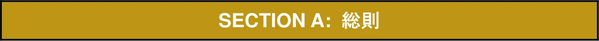

2026年競技規則(SectionA)_日本語版
JAF の公式サイトではありません。JAF が公開する PDF を自動変換した非公式の検索用アーカイブです。記載内容は必ず JAF の原本 PDF で出典をご確認ください。 検索と AI 質問つきのビューアで開く
P.12026 FIA FORMULA ONE WORLD CHAMPIONSHIP
SECTION A:
総 則
（2025 年12 月10 日付発行 第１版仮訳）

目次:（項省略）ARTICLE A1: 一般原則3 ARTICLE A2: FIAフォーミュラワン世界選手権7 ARTICLE A3: エントリー、ライセンスおよび登録11 ARTICLE A4: 健全性要件15 ARTICLE A5: 主要ステークホルダーの一般的な役割および責任17 ARTICLE A6: 調査、照会権および違反の通知23 ARTICLE A7: 違反の裁定および制裁26 ARTICLE A8: 機密保持、公表、およびデータプライバシー33 ARTICLE A9: 施行期間、改正、解釈およびその他35 APPENDIX A1: 定義39 APPENDIX A2: 諮問委員会の概要48 APPENDIX A3: 電子デバイスへのアクセス（「要求（DEMANDS）」）49 APPENDIX A4: FIAフォーミュラワン世界選手権エントリーフォームおよび52 F1チーム主要人員登録フォームAPPENDIX A5: PU製造者主要人員登録フォーム52 APPENDIX A6: 人員移動フォーム52 APPENDIX A7: 2026〜2030年におけるパワーユニット、燃料およびオイルの供給53 APPENDIX A8: 選手権トロフィーのルール64 APPENDIX A9: 翌年以降のセクションAに対して承認された変更65
P.3PREAMBLE：前文
諮問委員会：RGAC統括機関：F1委員会 / WMSC F1規則（下記A1.2.2にて規定）は、FIAおよびFIAフォーミュラワン世界選手権（以下「選手権」）を支える基本的価値を保護することを目的として採択される。特に、F1規則は以下の中心的な目的（以下「目的」）を追求するものである。a.選手権をモータースポーツの最高峰として維持すること。b.選手権における最高水準の安全性を促進すること。c.選手権のスポーティング・フェアネス（競技上の公平性）を促進し、保護すること。d.選手権の競争バランスおよび持続可能性を促進すること。e.選手権、そのステークホルダー、F1チームおよびPU（パワーユニット）メーカーの、長期的な財務安定性および持続可能性を確保すること。f.選手権の環境サステナビリティを促進すること。g.選手権のイメージ、評判および健全性を保護すること。h.フォーミュラワン特有の技術、革新、工学的挑戦を保持すること。
P.4ARTICLE A1: 一般原則
諮問委員会：RGAC統括機関：F1委員会 / WMSC A1.1概要A1.1.1 FIAは、FIAフォーミュラワン世界選手権（以下「選手権」）における運営および規則制定の責任を負う。選手権は、国際競技カレンダーに含まれるFIAフォーミュラワングランプリ競技（以下「競技」）から構成され、世界選手権タイトルは２つ（ドライバーズとコンストラクターズ）である。A1.1.2選手権はFIAの専有財産である。FIAは、商業権保有者に対し、選手権の商業権を利用する独占的権利を付与している。A1.1.3本セクションA（総則）およびその付則は、選手権に一般的に適用される規定を含み、別の定めがない限り、FIA F1規則の他のすべてのセクションにも適用される。A1.2適用される規則A1.2.1選手権、その各競技、ならびにすべてのF1活動はFIAルールおよび規則に従い、FIAにより統括される。これには、FIA定款、FIA国際競技規則およびその付則（以下「ISC」）、FIA F1規則（A1.2.2項参照）、FIA倫理規定、FIA裁判および懲罰規定、ならびにFIAが随時発行（および改定）するその他すべての規則、方針、手続（総称して「FIAルールおよび規則」）が含まれる。またFIAは適時、拘束力を有するまたは拘束力を有しない指針、明確化、フィードバックを含み得るFIA F1文書（A1.2.3項参照）を発行することができる（A1.2.3項およびA9.5項参照）。A1.2.2「FIA F1規則」は、以下で構成される： - セクションA：FIAフォーミュラワン総則および関連する付則- セクションB：FIAフォーミュラワン競技規則および関連する付則- セクションC：FIAフォーミュラワン技術規則および関連する付則- セクションD：FIAフォーミュラワン財務規則（F1チーム）および関連する付則- セクションE：FIAフォーミュラワン財務規則（PU製造者）および関連する付則- セクションF：FIAフォーミュラワン運用規則および関連する付則A1.2.3 FIA F1文書a. FIAは、適時追加文書（以下「FIA F1文書」）を発行することができ、当該文書には、（基礎となるFIA F1規則条項において明示的に規定される範囲で）拘束力を有する指針、または拘束力を有しない指針が含まれ得る。これらの文書には「FIA-F1-Doc」の接頭辞が付され、その後に文書番号、バージョンおよび題名が続き、さらに当該文書が拘束力を有するか否か（拘束力を有する場合には、その文書が発行される根拠となるFIA F1規則条項の参照を含む）が記載される。FIAは、当該FIA F1文書をFIAポータル上でF1チームおよびPU製造者が利用できるようにする。F1チームおよびPU製造者は、当該FIA F1文書に定める守秘義務の制限に従い、これらの文書を各自の人員（該当する場合は供給業者）に共有する責任を負う。FIAは、当該文書の守秘義務の制限に従い、競技審査委員会およびその他FIAが適切と判断する方法（通常は電子メール）により、指定された受領者に対し、FIA F1文書の写しを提供することができる。b.当該文書の内容は、通常は機密であり、FIAにより指定された受領者のみが閲覧できる。受領者は、必要がある場合には、専門アドバイザー、供給業者、自らの法的グループのメンバーと当該内容を共有することができ、また適用法により要求される場合には開示することができる。FIAは、自己の裁量により、機密情報を削除した上で、当該文書をウェブサイト上に公表し、またはメディアに展開することができる。
P.5c.拘束力を有するものとして指定されるFIA F1文書は、FIAが発行する文書に限定され、以下を含む： i.財務規則の基礎条項に従い「決定事項」として指定される文書。ii.技術規則の基礎条項により定められ、かつこれに従って、F1車両に特定のコンポーネントまたはデバイスを適正な取り付けに関する技術仕様を、適時に提供する文書。iii. FIA F1規則への適合のために、F1チームおよび／またはPU製造者がFIAに提出しなければならない必須情報または文書を定め、および／または当該情報あるいは文書の形式を定義する文書。iv. 選手権の参加者、観客その他来場者の安全を保護するために必要であるとFIAが認める緊急措置を定義する文書。d.拘束力を有しないものとして指定されるFIA F1文書は、助言的性質を有するにとどまり、FIA F1規則の一部を構成するものではない。当該文書は、FIA F1規則の適用および執行に関する指針、解釈、見解またはフィードバックを提供する場合があり、一般的に、FIA F1規則を遵守するために必要な事項についてのFIAの立場を示すものとするが、適用される規則の範囲を超えて、チームまたはPU製造者に追加の遵守義務または要件を課すものではない。拘束力を有しないFIA F1文書の例として、以下のようなFIA発行文書が含まれる場合がある： i.技術指示書（Technical Directives）または競技指示書（Sporting Directives）として指定される文書。ii. FIA F1規則の特定の条項に関する解釈、指示、明確化、情報提供、および／または追加の詳細を提供する文書。iii. FIA F1規則へのF1車両の適合性を検証するためにFIAが実施し得る検査、確認または測定の詳細を提供する文書。iv. FIA F1規則の改善を目的として、F1チームおよび／またはPU製造者に対し、特定のコンポーネントまたはデバイスを評価する試験、または特定の測定または計算の実施等を要請する文書。v. 運用上の指示または情報を提供する文書。A1.2.4適用法本FIA F1規則のいかなる規定も、適用法の適用を損ない、または影響することを意図するものではない。FIA F1規則は、適用法に関する助言または指針を含まない。またFIAは、FIA F1規則に含まれる情報が適用法に適合していることについて、いかなる表明または保証も行わない。適用法が、A1.5.2項に定義される対象者のFIA規則および規定上の義務と抵触する可能性がある場合には、適用法が優先されるものとし、当該対象者にはFIA規則および規定の違反は成立しないものとする。A1.3適用
P.6A1.3.1本選手権、各競技、またはF1活動において、いかなる立場であれ参加する対象者（A1.3.2条に定義される）は、その参加条件として、FIA規則および規定（FIA F1規則を含む）ならびにすべての決定に羈束（きそく）され、これらを遵守することに同意したものとみなされる。また当該対象者は、FIAがFIA規則および規定を執行する権限（違反時の適用可能な結果を含む）に服すること、ならびに競技審査委員会およびFIA法廷（FIA Courts）の管轄に服し、FIA規則および規定に基づき提起される事案および上訴を調査、審理、裁定する権限を受け入れることに同意したものとみなされる。A1.3.2 FIA規則および規定（FIA F1規則を含む）は、以下の者（各々を「対象者（Covered Person）」という）に適用される。a. F1チームおよびその人員b. PU製造者およびその人員c.ドライバーd. ASN e.オーガナイザーf.プロモーターg.単独サプライヤーh.サーキット運営者i.オフィシャルj. A3.5項に従う新規参入チームk. A3.6項に従う新規参入PU製造者l. A1.4.1項により事実として該当するその他の者m. FIA規則および規定および／またはFIA F1規則に羈束（きそく）されることに書面で同意したその他の者A1.3.3疑義を避けるための補足として、対象者はすべてのFIA規則および規定に羈束されるため、対象者がFIA F1規則以外のFIA規則および規定に違反したと認定された場合、当該違反は、別の定めがない限り、当該違反に該当する特定のFIA規則および規定に基づいて追及される。A1.4違反に対する一般的責任A1.4.1 ISC第9条15と整合する形で、各F1チーム、PU製造者、ならびにFIA F1規則に羈束されるその他の事業体は、自らの人員、ならびに自らの代理として行為するその他の者（当該事業体の法的グループ内のいずれかの事業体の代理として行為する者を含む）の行為により生じたFIA F1規則違反について、無過失責任（strict liability）を負う。上記一般性を何ら制限することなく、F1チームおよび／またはPU製造者は、セクションDおよびセクションEの要件に従い、その代理として、またはその最終支配当事者（Ultimate Controlling Party）の代理として署名されたあらゆる宣誓（Declaration）に拘束され、かつそれに関して無過失責任を負う。A1.4.2本FIA F1規則に基づき、特に明記されている場合を除き、個人に対する責任は発生しないものとする。FIA F1規則が個人に対し特定の義務を課す場合、その個人は当該義務違反について個人的に責任を負う場合がある。これは、該当するF1チーム、PU製造者またはその他の事業体が負う厳格責任に追加して適用される。A1.4.3 A1.4.2項の規定にかかわらず、また疑義を避けるため明確にすると、いかなる個人に対し金銭的制裁（Financial Penalty）が科されることはない。ただし当該個人が以下のいずれかである場合を除く。a.ドライバー
P.7b. F1チームまたはPU製造者の主要な個人（Key Individual）であり、かつセクションB、
C、D、EおよびFの範囲外の違反に該当する場合その他すべての場合において、個人の特定行為について金銭的制裁が適用されるとき、その制裁は、当該個人が属するF1チーム、PU製造者またはその他組織に対して科される。A1.4.4対象者は各自、常にFIA規則および規定を十分に認識し、これを遵守する個人的責任を負う。FIA規則および規定の不知は、いかなる違反に対しても抗弁とはならない。
P.8ARTICLE A2: FIAフォーミュラワン世界選手権
諮問委員会：RGAC統括機関：F1委員会 / WMSC A2.1選手権のフォーマットA2.1.1 FIAは、各年1月1日より前に、国際競技カレンダーにおいて、選手権に含まれる競技の一覧を公表する。A2.1.2選手権における競技会の最大数は24とし、最小数は8とする。A2.1.3選手権に参加できるF1車両は最大24台とし、各F1チームは2台のF1車両をエントリーする。A2.1.4世界選手権タイトル： a.ドライバーズ選手権のタイトルは、A2.2項に従って算出されるポイントの総獲得数が最も多いF1ドライバーに授与される。この算定においては、実際に開催された競技において得られたすべての結果を考慮する。b.コンストラクターズ選手権のタイトルは、A2.2項に従って算出されるポイントの総獲得数が最も多いF1チームに授与される。この算定においては、実際に開催された競技において、当該F1チームの2台のF1車両が得た結果の両方を考慮する。F1チームが、自社製造ではないパワーユニットを使用してコンストラクターズ選手権タイトルを獲得した場合であっても、コンストラクターズ選手権タイトルは 当該F1チームに授与される。c. 2名以上のF1ドライバーまたは2チーム以上のF1チームが、選手権を同一ポイントで終了した場合、選手権における上位順位（いずれの場合も）は、以下により決定される。i.レースにおける1位獲得回数が最も多い者。ii. 1位獲得回数が同数の場合、レースにおける2位獲得回数が最も多い者。iii. 2位獲得回数が同数の場合、レースにおける3位獲得回数が最も多い者。以後、勝者が決定するまで同様に適用する。iv. 上記により順位が決定しない場合、当該シーズンにおけるF1ドライバーの予選結果に対して、上記と同一の基準を適用するものとする。A2.2ポイントA2.2.1 １つの競技において付与されるポイントドライバーズ選手権およびコンストラクターズ選手権の双方のタイトルに対するポイントは、各競技において、最終レース認定順位に基づき、かつスタートシグナルからセッション終了シグナルまでの間におけるリーダーの走行距離に応じて付与される。いかなる場合においても、セーフティカーまたはバーチャルセーフティカーの手順によらず、リーダーが連続する少なくとも2周の完走ラップを完了していない限り、ポイントは付与されないものとする。a.首位車両が2周を完了しているが予定レース距離の25％未満しか完了していない場合、ポイントは下表の第1欄に従って付与されるものとする。
P.9b.首位車両が予定レース距離の25％以上50％未満を完了した場合、ポイントは下表の第2欄に従って付与されるものとする。c.首位車両が予定レース距離の50％以上75％未満を完了した場合、ポイントは下表の第3欄に従って付与されるものとする。d.先頭車両が予定レース距離の75％以上を完了した場合、ポイントは下表の第4欄に従って付与されるものとする。フォーメーションラップがセーフティカー先導で開始される場合（B5.10項参照）、予定レース距離は、B2.5.2b項に従って算出された距離とみなされる。
| ポイント | ||||
| Col. 1 | Col. 2 | Col. 3 | Col. 4 | |
| 順位 | ||||
| ≥ 2L | ≥25% | ≥50% | ≥75% | |
| 1st | 6 | 13 | 19 | 25 |
| 2nd | 4 | 10 | 14 | 18 |
| 3rd | 3 | 8 | 12 | 15 |
| 4th | 2 | 6 | 10 | 12 |
| 5th | 1 | 5 | 8 | 10 |
| 6th | 4 | 6 | 8 | |
| 7th | 3 | 4 | 6 | |
| 8th | 2 | 3 | 4 | |
| 9th | 1 | 2 | 2 | |
| 10th | 1 | 1 |
A2.2.2スプリントにおいて付与されるポイント各スプリントにおいて、ドライバーズ選手権およびコンストラクターズ選手権の双方のタイトルに対するポイントは、当該スプリント最終認定順位に基づき、下表に従って付与されるものとする。
| 順位 | ポイント |
| ≥ 50% | |
| 1st | 8 |
| 2nd | 7 |
| 3rd | 6 |
| 4th | 5 |
| 5th | 4 |
| 6th | 3 |
| 7th | 2 |
| 8th | 1 |
以下のいずれかに該当する場合、ポイントは付与されないものとする。
P.10a.先頭車両が、セーフティカーまたはバーチャルセーフティカーの介入がなく、少なくとも2周を完了していない場合；またはb.先頭車両が、予定されたスプリントセッション距離の50％未満しか完了していない場合。フォーメーションラップがセーフティカー先導で開始された場合（B5.10項参照）、当初のスプリントセッション距離は、B2.3.2 a)項に従って算出された距離とみなされる。A2.2.3デットヒート同一順位で同着となったF1車両に対して付与される賞およびポイントは合算され、均等に分配されるものとする。A2.3 F1車両の外装カラーリングA2.3.1 F1車両の外装カラーリングに関するISCの規定は、本選手権には適用されない。A2.3.2 F1チームがエントリーする2台のF1車両とも、当該選手権の各競技会において、実質的に同一の外装カラーリングで提示されなければならない。選手権期間中に外装カラーリングのへ大幅な変更は、FIAおよび商業権保有者の同意がある場合にのみ認められる。FIAおよび商業権保有者への同意を申請する手続は、FIA-F1-DocXXに定められる。A2.3.3 F1車両における広告a.政治的または宗教的性質を有する広告、またはFIAの利益を損なう恐れのある広告は、厳格に禁止される。b. F1チームは、F1車両の外装カラーリングに施される何れの広告も適用法令に適合していることを確実にしなければならない。A2.3.4 F1車両外装カラーリングの要件a. 各F1車両は、青または白のいずれかで、少なくとも高さ75mm以上のFIAロゴを表示しなければならない。当該ロゴは、ノーズ上面またはノーズ側面のいずれかに配置され、車両側面から視認できなければならない。b. F1車両の製造者名またはエンブレムは、当該F1車両ノーズ前方に表示されなければならず、いずれの場合でも、その最大寸法は少なくとも25mmでなければならない。c. F1ドライバーの氏名は、当該F1車両の外部ボディワーク上に表示され、明確に判読できなければならない。d.各F1チームのF1車両がコース上において相互に容易に識別できることを確実にするため、1台の車両に装着される主ロール構造上方のオンボードカメラは、当該F1チームに供給された状態を維持しなければならず、他の1台の車両のオンボードカメラは、主として蛍光イエローでなければならない。e.外装カラーリングは、F1車両のボディワーク外側へはみ出してはならず、かつF1車両の左右両側において実質的に同一でなければならない。A2.4競技番号A2.4.1 A2.4.3項に従うことを条件として、すべてのF1ドライバーには先着順で恒久的な競技番号が割り当てられる。F1ドライバーは、当該選手権において自身が参加するすべての競技に
P.11おいて、当該競技番号を使用しなければならない。選手権の開始時または期間中に新たに参加するF1ドライバーについても、同様の方法により恒久的な競技番号が割り当てられる。ドライバーは、当該申請が選手権エントリーリストの公表前に行われ、かつ次の選手権においてのみ効力を生ずることを条件として、競技番号の変更をFIAに対し書面により申請することができる。A2.4.2現世界チャンピオンドライバーは、カーナンバー「1」を使用することができる。当該F1ドライバーに従前割り当てられていた競技番号は、当該ドライバーが世界チャンピオンのタイトルを保持しない場合においても、次の世界選手権において当該ドライバーのために留保されるものとする。A2.4.3 F1ドライバーは、FIAに対して書面により当該決定を確認した場合、または連続する2シーズンの選手権で競技に参加しなかった場合には、その競技番号を恒久的に失うものとする。当該競技番号は、次の選手権シーズンにおいて使用可能となるものとする。A2.4.4その他のすべてのレーシングドライバーは、当該ドライバーに関してFIAがF1チームに発行した競技番号を使用しなければならない。A2.4.5競技番号は1から99まで（包括的）とする。ただし、17は除外されるものとする。A2.4.6各F1車両は、選手権開始時にFIAにより公表された当該ドライバーの競技番号、または当該ドライバーの代替として割り当てられた競技番号を表示しなければならない。当該競技番号はF1車両の前方から明確に視認可能でなければならず、その高さは160mm以上、かつ線幅は25mm以上でなければならない。A2.5競技の延期または中止A2.5.1競技は、ISCに従って、延期または中止される場合がある。A2.5.2出走可能なF1車両が12台未満である場合、当該競技は延期または中止される場合がある。A2.6 FIA表彰式および公式晩餐会A2.6.1ドライバーズ選手権において第1位、第2位および第3位で終了したF1ドライバー、コンストラクターズ選手権において第1位で終了したF1チーム代表者、ならびに優勝車両の走行可能な状態または静止状態のいずれか（FIAが指定するもの）およびその運用に必要な人員は、「FIA Prize Giving Ceremony（FIA年間表彰式）」および「ガラディナー（公式晩餐会）」の全期間にわたり出席しなければならず、その費用は各F1チームの負担とする。これらの要件のいずれか１つにでも従わない場合には、不可抗力の場合を除き、不履行ごとに最大250,000ユーロの罰金が科されるものとし、当該罰金はISCに従い、関係するF1チームがFIAに支払うものとする。A2.6.2コンストラクターズ選手権トロフィーおよびドライバーズ選手権トロフィーは、FIAによりFIA年間表彰式およびガラディナーにおいて、世界選手権コンストラクターおよび世界選手権ドライバーに授与されるものとする。これらのFIAトロフィーは、付則A8の要件に従うものとする。また、FIAの決定により、その他のトロフィーおよび賞が授与される場合がある。
P.12ARTICLE A3: エントリー、ライセンスおよび登録
諮問委員会：RGAC（別の定めがある場合を除く）統括機関：F1委員会 / WMSC（別の定めがある場合を除く）A3.1 F1チームのエントリー申請A3.1.1既存F1チームおよび新規参入チームは、各年度の選手権毎に申請書類（エントリーフォームおよびFIAが要求するその他関連書類を含む）を提出しなければならない。A3.1.2 N年の選手権に参加するためのF1チームによる申請は、N-1年の10月21日から11月1日まで（両日を含む）の期間にFIAへ提出することができる。当該申請には、以下の書類を含めなければならない。(i) 付則A4Aに定めるエントリーフォーム(ii) 付則A4Bに定めるF1チームの主要人員登録フォーム(iii) F1チームのスーパーライセンス申請書(iv) N-1年の12月15日までにエントリーフィーをFIAへ支払う旨の誓約書上記以外の時期に行われるF1チームの申請は、FIAが定める遅延エントリーフィーを当該F1チームがFIAへ支払う場合にのみ、FIAによって審査される。FIAは、当該申請を受領してから30日以内に、申請チームへ申請結果を通知する。エントリー申請時に提出された情報（付則A4またはA5の各フォームに含まれる情報を含む）に、初回提出後に変更が生じた場合、当該F1チームは速やかにFIAへ通知するとともに、提出済みの各フォームを更新しなければならない（該当する場合には、いかなる場合でも次の競技の開始前までにこれを行うものとする）。A3.1.3 F1チームによる申請は、以下を含まなければならない。a.申請者がFIA規則および規定を精読したこと、ならびに自らを代表して、かつ本選手権への参加に関連するすべての関係者を代表して、これらを遵守することに同意する旨の確認。b. F1チームの名称（シャシーの名称を含まなければならない）c. パワーユニットの銘柄（F1チームは選手権期間中のいかなる時点においてもパワーユニット製造者を変更することができるが、当該変更については、当該変更後のパワーユニットが最初に使用される次の競技の前に、速やかにFIAに通知しなければならない）。d. F1車両の銘柄（当該F1チームが自ら製造しないパワーユニットを搭載する場合、F1車両の名称は、ブランド上の理由により変更される場合を除き、当該F1チームの名称とパワーユニット製造者の名称を組み合わせたものとし、常に前者を後者に先行させるものとする）。e. F1ドライバーの氏名（F1ドライバーは、FIAが定める手数料の支払いにより、エントリー申請後に指名することができる）；およびf. 申請者は、各競技の開始時に自らのF1車両を車両検査に提示することにより、2台のF1車両の両方をもってすべての競技に参加すること、ならびにFIA規則および規定の制約の範囲内において、選手権における可能な限り最高の順位を達成するため、他のF1チームとの競技状態において各競技を完走するよう、自らのF1車両についてあらゆる合理的努力を尽くすことを確約するものとする。ただし、FIA F1規則のガバナンス枠組みに従い合意された限定的な例外（例：不可抗力）のみを除く。A3.1.4 F1チームによる申請は、上記要件に従い適正に記入され、かつエントリーフィーの適時の支払いを伴うものでなければならない。これらの要件を満たさない何れの申請も、FIAによ
P.13り受理されないものとする。FIAは、受理されたF1車両およびF1ドライバーのリストを、それぞれの競技番号とともに、前年（Year N-1）の12月20日までに公表するものとする。A3.1.5承認された申請者は、本選手権のすべての競技に自動的にエントリーされたものとみなされる。FIAにより当該エントリー申請が受理されていない限り、F1チームは本選手権またはいかなる競技にも参加することはできない。A3.2パワーユニット製造者のエントリー申請統括機関：PU製造者ガバナンス協定 / WMSC 2026年から2030年の選手権において1つ以上のF1チームに対して使用されるパワーユニットを供給するため、付則A7の第1項に定める手続に従い登録されたすべてのPU製造者は、当該選手権期間中に使用される当該パワーユニットの供給を開始することを意図する最初の年の3月1日までに、付則C5の要件に従い、FIAに対してパワーユニット公認書式を提出しなければならない。付与された公認は、2030年選手権の終了時まで有効とする。ただし、PU規則に実質的な変更があり、新たな公認書式の提出を要する場合を除く。当該公認書式は第[C.、C.]項に定める手続に従い、随時更新することができる。A3.3ライセンスA3.3.1 F1ドライバー： a. F1ドライバーは、ISCおよび付則L項の要件に従い、有効なスーパーライセンスおよび国際ライセンスを所有していなければならない。また、F1チームのフリー走行ドライバーも同様に、フリー走行限定スーパーライセンス（Free Practice Only Super Licence）および国際ライセンスを有効に所有していなければならない。b. ISCまたはB1.10.4項に基づき、戒告または罰金以外のペナルティが科される場合、競技審査委員会はF1ドライバーのスーパーライセンスにペナルティポイントを付与することができる。F1ドライバーがそのスーパーライセンスにおいて合計12ペナルティポイントに達した場合、当該ドライバーは次の競技に出場停止とされ、その後、当該スーパーライセンスから12ポイントが削除されるものとする。当該ペナルティポイントは、付与の日から12か月間、当該F1ドライバーのスーパーライセンス上に残り、付与日から12か月後当日にそれぞれ削除されるものとする。A3.3.2 F1チームは、本選手権への参加条件として、有効なスーパーライセンスを所有しなければならない。当該スーパーライセンスは、エントリーフォームの提出期限（A3.1.2項参照）と同一期限までに、所定の様式をFIAに提出することにより、毎年更新されなければならない。A3.3.3オーガナイザーおよび以下のオフィシャルは、それぞれ有効なスーパーライセンスを所有していなければならない：競技審査委員会、レースディレクター、競技長、メディカルデリゲート、副メディカルデリゲート、テクニカルデリゲート、メディアデリゲート、計時員、セーフティカードライバー、式典長、ならびにFIAが指定するその他のオフィシャル。これらのスーパーライセンスは、当該ライセンスが使用される最初の競技における最初の車両検査に先立つ14日前までに、所定の様式をFIAに提出することにより、毎年更新されなければならない（FIAは、状況に応じて異なる期限に合意することができる）。
P.14A3.4 F1チームおよびPU製造者の主要人員登録証明書諮問委員会：RGAC統括機関：F1委員会 / PU製造者ガバナンス協定 / WMSC ISC第2.6.4条および第2.6.5条に従い、F1チームおよびPU製造者は、当該規定に記載された人員ならびに付則A4Bおよび付則A5により登録が求められるその他の人員を、FIAに登録しなければならない。A3.5新規参入チームA3.5.1選手権において必要とされる基準を維持するため、申請が承認された新規参入チームは、N年における当該選手権への初参加に先立ち、以下のとおりFIA F1規則の各条項または各セクションを遵守しなければならない。a.セクションA（一般規則）：N-1年の全期間にわたり適用； b.セクションB（競技規則）B11項：N-1年の全期間にわたり適用； c.セクションD（財務規則－F1チーム）：N-1年の全期間にわたり適用； d.セクションF（運用）、F1項（一般原則）、F2項（適用範囲、制裁および違反）、F3.1項（シャットダウン期間）、およびF4項（空力テスト制限）：N-1年の全期間にわたり適用； e. FIA F1規則において新規参入チームに適用される旨が明示されているその他のすべての規定。N年に先立つ各該当年において施行されている規定への適合が求められる。例えば、初年度参入が2026年である場合には、FIA F1規則の2025年版における該当規定への適合が求められる。選手権への参加承認の条件として、参入を予定する新規参入チームは、上記規定への適合を証明しなければならない。新規参入チームの承認が、上記期間の開始後に行われた場合には、上記規定は、FIAと当該新規参入チームとの間で締結される個別の合意により置き換えられることがあり、当該合意は、本条に基づく新規参入チームの適合性の判断において優先して適用される。A3.5.2新規参入チームは、ISCの付則として定められる適格性審査（Fit and Proper Persons Test）（A4.1項参照）に適合しなければならない。A3.6新規参入PU製造者統括機関：PU製造者ガバナンス協定 / WMSC A3.6.1 2026年〜2030年のシーズンに行われる選手権のいずれかにおいて、1つ以上のF1チームに対し（供給者と同一の法人であるF1チーム、または供給者と提携関係にあるF1チームを含む）に対しパワーユニットを供給することを希望するいかなる事業体も、PU製造者登録フォームを提出し、PU製造者ノンアサート協定（PU Manufacturer Non Assert Agreement）（技術規則付則C3で定義される）を締結し、かつ適用されるガバナンス手続に合意しなければならない。A3.6.2本期間において、N年からパワーユニット供給を開始することを希望するPU製造者は、PU製造者登録フォーム提出期限をN-4年の6月30日とする。
P.15A3.6.3下記段落に従うことを条件として、FIAは、登録書類およびFIA F1規則により定められる基準を満たしている場合に限り、当該PU製造者の登録を受理する。FIAは、A3.6.2項に定める期限を遵守しなかったPU製造者についても、当該PU製造者がA3.6項の要件に適合していることを証明でき、その期限不遵守が他のPU製造者に対する競争上または財務上の優位性を当該PU製造者が得ていないことをFIAが確認できる場合に限り、その登録を受理することができる。A3.6.4 FIAによる登録確認の有無にかかわらず、PU製造者の登録は、申請者がFIAに対して適用される管理手数料の支払いを完了し、PU製造者ノンアサート協定を締結し、かつ適用されるガバナンス手続に合意した時点においてのみ、完了（その時点においてのみ有効かつ効力を生じる）したものとみなされる。A3.6.5選手権において必要とされる基準を維持するため、登録が受理された新規参入PU製造者は、N年における選手権への初参加前に、以下のとおりFIA F1規則の次の条項またはセクションを遵守しなければならない。a.セクションA（一般規則）：N-4年、N-3年、N-2年、N-1年の全期間にわたり適用； b.セクションE（財務規則－PU製造者）：N-3年、N-2年、N-1年の全期間にわたり適用； c.セクションF（運用）： i. F3.2項（シャットダウン期間）、F5.1項（パワーユニットテストベンチ）、F5.2（パワーユニットテストベンチの運用制限）、F5.3.2（PU製造者およびF1チームに影響を与えるパワーユニットテストベンチ活動）：N-4年、N-3年、N-2年、N-1年の全期間にわたり適用； ii. F5.3.3項（カスタマーF1チーム向けの追加パワーユニットテストベンチ機会）：N- 1年の全期間にわたり適用； e. FIA F1規則において、新規参入PU製造者に適用されること旨が明示されているその他すべての規定N年より以前の各該当年において施行されている規定を遵守することが要求される。例えば、初参入年（N年）が2028年である場合、FIA F1規則の2025年版における関連規定を遵守することが求められる。選手権への登録条件として、参入予定の新規PU製造者は、上記規定への適合を証明しなければならない。A3.6.6新規参入PU製造者は、ISCの付則として定められるFit and Proper Persons Test（適格性審査）（A4.1項参照）を遵守しなければならない。
P.16ARTICLE A4: 健全性要件
諮問委員会：RGAC統括機関：F1委員会 / WMSC A4.1適格性および適正審査A4.1.1適格性および適正審査（以下「FPP審査」）は、ISC付則F項に定められており、本選手権への参加条件の一部を構成する。FPP審査の目的は、本選手権のイメージ、評判および健全性を保護することにある。A4.1.2 FPP審査は、各F1チーム、新規参入チーム、PU製造者、新規参入PU製造者（各々「対象事業体」という）に属する個人であって、適格かつ適正な者（以下「FP者」）となること、またはそのステータスを維持することを希望する者（以下「FP代表者」という）に適用される。本規定およびISC付則F項の目的において、FP代表者は以下の者が含まれる。a. F1チーム、新規参入チーム、PU製造者、または新規参入PU製造者の発行済株式の30%以上を（直接または間接に）保有する個人； b. 本セクションAの4.1.4項に従うことを条件として、F1チーム、新規参入チーム、PU製造者、または新規参入PU製造者のCEO（又はこれに相当する地位）もしくはチーム代表（またはこれに相当する地位）、または当該事業体を統括し、もしくはその経営をその他の方法により決定する個人。A4.1.3 FPP審査は、付則F項の公表日以降、以下の者に対してのみ実施される。a.新たなFP代表者（以前に対象事業体に関与したことがない者、または対象事業体から離脱した後に同一または別の対象事業体へ復帰することを決めた者）；およびb. ISC付則F項に定める欠格条件のいずれかが当該者に適用され得るような状況変更が生じた、既存のFP者に対して適用される。A4.1.4本セクションAの4.1.2 a.項および4.1.3 b.項に定める基準を満たすFP代表者について、FIAは、当該者をFPP審査の対象としないことがFIAの倫理感に反すると判断した場合には、当該者に対し、FPP審査の適用免除を認める権利を留保する。A4.1.5対象事業体は、FPP審査に合格すること自体を要求されない。ただし対象事業体は、ISC付則F項に従い、FP代表者がFPP審査の要件を満たし、かつFP者としての地位を維持できるようにするため、一定の義務を遵守しなければならない。A4.2アンチドーピングA4.2.1 FIAは2010年以降、世界アンチ・ドーピング規程を遵守している。世界アンチ・ドーピング規程は、同規程に基づくFIAの責務に従い、かつスポーツにおけるドーピング根絶のためのFIAの継続的な取り組みを推進するため、FIAアンチ・ドーピング規則に組み込まれている。FIAアンチ・ドーピング規則は、ドライバーの健康を保護し、規則および競技者相互の尊重、公正な競争、公平な競争条件、ならびにクリーンスポーツの価値を通じて、モータースポーツの健全性を維持することを目的とする。A4.2.2 ISC付則A項に定められるFIAアンチ・ドーピング規則の「本アンチ・ドーピング規則の適用範囲」の序文に列挙された者は、選手権参加の条件として、FIAアンチ・ドーピング規則に従い、これを遵守することに同意するものとする。
P.17A4.3競技操作の防止A4.3.1 FIA競技操作防止規則は、モータースポーツの健全性を維持し、モータースポーツ競技の結果に不正な影響を及ぼそうとするいかなる行為からも保護することを目的とする。A4.3.2 ISC付則M項に定められるFIA競技操作防止規則において「競技会ステークホルダー（Competition Stakeholders）」として定義される者は、選手権参加の条件として、FIA競技操作防止規則に拘束され、これを遵守することに同意するものとする。A4.4セーフガーディングA4.4.1すべての参加者の安全および福祉は最も重要な事項である。FIAは、すべての個人が虐待およびハラスメントのない環境で競技し、働き、能力を発揮する基本的権利を有することを認識する。FIAセーフガーディング方針および規則は、モータースポーツ活動に関与するすべての者、特に子どもおよび社会的弱者の福祉および安全を促進し、すべての者が安心かつ信頼をもって参加できる環境を醸成することを目的とする。A4.4.2 ISC付則S項に定められるFIAセーフガーディング方針および規則において「対象者」として定義される者は、本選手権への参加条件として、FIAセーフガーディング方針および規則に従い、これを遵守することに同意するものとする。A4.5アンチアルコールA4.5.1 FIAは、特にアルコールのように人間の行動および判断に影響を及ぼし、運転能力を損なう可能性のある物質を禁止することにより、モータースポーツの安全性向上に取り組む。A4.5.2各F1ドライバー、その他レーシングドライバーおよびオフィシャルは、本選手権への参加条件として、ISC付則C項に定められるFIAアンチ・アルコール規則に従い、これを遵守することに同意するものとする。
P.18ARTICLE A5: 主要ステークホルダーの一般的な役割および責任
諮問委員会：RGAC（別の定めがある場合を除く）統括機関：F1委員会 / WMSC（別の定めがある場合を除く）A5.1全対象者に適用される一般義務A5.1.1すべての対象者は、以下の一般義務を遵守しなければならない。また、各F1チームおよび各PU製造者は、各々の人員および各々のグループに属する法人のその他の構成員（およびそれらの人員）が同様に遵守するよう確保しなければならない。a.常にFIA規則および規定を遵守し、かつ自己の役割および責任の範囲内の規定を遵守すること。b. A6.3項および付則A3に基づきFIAから行われる、適用される書面による情報／アクセスの要請または要求に対し、指定された期限までにこれに従うこと。c. FIAが発行する文書により要求される情報または書類を、当該文書に定める期限までに提出すること。d. FIAがその規制機能を行使（FIAにより、またはFIAのために実施される調査を含む）するにあたり、FIAと全面的かつ適時に協力すること。e. FIAがその規制機能を行使（FIAにより、またはFIAのために実施される調査を含む）することを、遅延させ、妨害し、または阻害せず、またその試みを行わないこと。f. FIA規則および規定の違反の疑いに関連する情報について、善意により報告することを当該者に思いとどまらせる意図で、いかなる者に対しても脅迫し、または威圧してはならない。また、FIA規則および規定の違反の疑いに関して、FIA、競技審査委員会、FIA法廷または審判員団、FIAのために調査を行う者、法執行機関、規制当局または懲罰機関、その他の権限ある機関に対し、善意で証拠または情報を提供した（または提供する可能性のある）いかなる者または証人に対しても、報復を行わないこと。g.虚偽または不正なものであることを認識している、または合理的に認識すべきである宣誓書に署名し、またはそのような情報をFIAへ提出しないこと。h.不正確、不完全、誤解を招く、またはその他FIA F1規則に適合しない報告文書をFIAへ提出しないこと。i.適用される決定、違反受諾協定（Accepted Breach Agreement）、または和解の条件を遵守すること。j. FIA規則および規定に基づき課される暫定的な資格停止または制裁の条件を遵守すること。k. FIA F1規則に基づき適用されるすべての義務を履行し、常に誠実かつ健全に、また透明性と協力の精神をもって行動すること。l.作為または不作為を問わず、FIAまたは選手権の信用を失墜させるいかなる行為も行わないこと。m. ISC12.2項を含み、FIA F1規則の他のセクション、またはFIA規則および規定に基づき適用されるその他の義務を遵守すること。
P.19A5.1.2付則A3の3.1項および3.3項に従うことを条件として、本A5.1項のいかなる規定も、F1チームまたはPU製造者の法的秘匿特権（リーガル・プロフェッショナル・プリビレッジに関するものを含む）を放棄するものではない。A5.2 FIA A5.2.1 FIAは、FIA規則および規定（FIA F1規則を含む）の策定、運用管理および執行の責任を負い、それらに定められた権限を行使し、ならびに機能を遂行する責任を負う。A5.2.2 FIAは、FIA F1規則への遵守状況を継続的に監視し、遵守違反の疑いのある事案を調査し、FIA F1規則違反に対して適切な執行措置を講じる責任を負う。A5.2.3別の定めがある場合、または文脈上別の解釈が必要な場合を除き、以下のとおりとする。a.訴追機関、または（財務規則に関する事項については）コストキャップ管理部門は、FIAを代表して調査を実施する権限を有する。したがって、調査の文脈におけるA.6項および付則A3における「FIA」への言及は、これに従って解釈されるものとする。ただし、A6.3.1 a.項に基づく情報／アクセスの要請権は、FIAシングルシーター部門またはFIA法務部、またはそれらの指名者によっても行使することができる。b.セクションAにおける「FIA」への言及のうち、財務規則の文脈で適用されるものは、コストキャップ管理部門を意味するものとして解釈されるものとする。c.上記以外の場合、FIA F1規則における「FIA」への言及は、FIAシングルシーター部門（当該部門の直接指揮下で業務を行い、FIA F1規則の実施に関する特定の事項を取り扱う権限および責任を有するFIA職員を含む）を指す。d.疑義を避けるため付言すると、特に明記されない限り、「FIA」への言及には、競技審査委員会、いかなるFIA法廷または審判員団も含まれない。A5.2.4 FIAは、独立監査法人、競技審査委員会、外部統制機関、専門家、外部法律顧問、その他専門家またはサービス提供者を関与させ、その機能遂行を補助させることができる。これらの者は、FIAから役務の対価を受けることがあり、かつ守秘義務を追う。A5.3プロモーターおよびオーガナイザーA5.3.1プロモーター商業権保有者は、各競技についてプロモーターを任命する。プロモーターは競技のプロモーションを行う責任を負い、財務規則に関する事項を除き、当該競技に関連する財務上および商業上の事項についてのみ管理権限を有する。プロモーターは、いかなる場合でも、競技期間中、安全、競技、技術、または運営に関する事項について介入してはならない。プロモーターは、FIA規則および規定に定められるすべての要件を遵守しなければならない。A5.3.2オーガナイザー競技のプロモーターは、当該競技のオーガナイザーを提案するため、関係するASN（またはその代理人）に対して、当該オーガナイザーをFIAへ推薦する申請を提出しなければならない。FIAは、いかなるオーガナイザーについても最終的な承認権限を有する。オーガナイザーは、競技が開催される国または地域のASN、またはその指名された者でなければならず、以下のいずれかである。(a) ASN管轄下のクラブ；または(b) ISCに従い、通常オーガナイザーによって行われる競技運営および規則上の義務を適切に遂行できる能力を有するその他のスポーツ団体。
P.20オーガナイザーは、ASNおよびFIAの権限の下で、当該競技運営に関する一般的責任を負い、FIA規則および規定に定められるすべての要件を遵守しなければならない。A5.3.3プロモーターおよびオーガナイザーに対する制限a. いかなるF1チームも競争上の優位性を得ないことを確保するため、下記b.を条件として、いかなるF1チームまたはF1チーム団体も、以下を行ってはならない。i. 競技を直接または間接に運営またはプロモートすること。ii. 競技のオーガナイザーまたはプロモーターとなること（直接または間接を問わず）。iii. 競技の運営に関して、ASNまたは当該ASNに加盟するクラブと関係を有すること（ただしFIA規則および規定で定められ、かつF1チームのASNへの適正な会員であることを反映する団体との関係を除く）。b. 本規定のいかなる内容も、(i) F1チームとは独立して運営されている関連会社がプロモーターまたはサーキット運営者となること、(ii) F1チーム、F1チームの持株会社または子会社、またはF1チームの持株会社のいずれかの子会社が、競技またはサーキットのスポンサーとなること、を妨げるものではない。A5.4 ASN ASNは単一の国内領域にわたって競技統轄権を行使する責任を負うFIA加盟団体である。ASNの役割および責任はFIA定款およびISCに定められている。本選手権に関して、かつ各自の管轄領域内において、ASNは（その他の事項を含め）国際ライセンスの発給、サーキットの公認、およびカレンダーフィーの支払いについて権限を有する。A5.5サーキット運営者サーキット運営者は、競技が開催されるサーキットについて責任を負う。サーキット運営者は、FIAにより発給されるサーキットライセンスの条件、およびISC付則O項に定める要件を遵守しなければならない。A5.6オフィシャルオフィシャルは、ISCおよびその付則V項に定められる役務および権限を有する。A5.7 F1チームおよびPU製造者統括機関：F1委員会 / PU製造者ガバナンス協定 / WMSC A5.7.1各F1チームまたは各PU製造者は、適用されるFIA F1規則のあらゆる側面について、常に遵守していることを、FIA、競技審査委員会、および関係するFIA法廷に対して証明し、納得させる義務を負う。A5.7.2各F1チームおよび各PU製造者は、各々の人員が以下を確実に履行しなければならない。a. F1チームまたはPU製造者およびその人員がFIA規則および規定の適用対象であることを通知され、かつFIA規則および規定（F1チームまたはPU製造者および／またはその人員に課されるすべての要件を含む）について周知されていること。b. 自己の責任範囲がF1チームまたはPU製造者によるFIA F1規則の遵守にどのような影響を及ぼし得るかについて通知され、かつ適切な教育を受けていること。
P.21c. FIAウェブサイト上で利用可能なFIA倫理・コンプライアンス・ホットラインについて通
知され、かつ、FIA倫理・コンプライアンス・ホットラインまたはその他いかなるFIA手続きを通じてFIA規則および規定違反を報告することが、人員とF1チームまたはPU製造者との間の機密情報に関する契約条項に違反するものではないことの保証を、すべての人員に与え、さらに当該人員のために適切な保護条項および方針が有効であることを確実にすること。d.個人用または私用の機器を、機密情報を含みまたは機密情報を露出させ得る方法で、業務関連活動に使用してはならないことを通知されていること。ただし、F1チームまたはPU製造者が当該人員と合意し個人用または私用の機器を業務関連活動に使用することが認められる場合、F1チーム、PU製造者および当該人員は、当該機器が潜在的な要求（付則3）.dの対象範囲から除外されないことを確認し、F1チームまたはPU製造者に雇用開始する際、以前の雇用主（F1チームまたはPU製造者を意味する）に属するいかなる資料、データまたは情報の所持も禁止されており、保持してはならず、当該以前の雇用主へ返還しなければならず、また新たな職務においていかなる状況でも使用してはならないことを通知されていること。A5.7.3人員の移動：F1チーム統括機関：F1委員会 / WMSC a.各F1チームは、機密情報が他のF1チームに開示されることを防止するため、合理的な措置を講じなければならない。いかなるF1チームも、機密情報が他のF1チームに開示されることを防止する義務を回避する目的で、人員（従業員、労働者、コンサルタント、請負業者、出向者、代理人、役員、またはその他いかなる恒久的または一時的な人員（下請業者により雇用された者を含む））を、直接または間接的に外部事業体を介して、他のF1チームへの移動をさせてはならない。本条項の目的において、以下の活動に関与する人員は、機密情報に関する知識を有していると見なされ、したがって本A5.7.3項の規定対象となる。i. F1車両の設計、研究開発またはシステムii.シミュレーション手法の開発iii. レース運用または戦略に関与する人員上記の一覧は網羅的ではなく、FIAは、本条項の目的に関連性があると判断する人員の範囲を拡大する権利を留保する。人員の移動が他のF1チームへの機密情報の開示防止義務を回避する目的で行われたものではないことについてFIAが確認できるようにするため、各F1チームは、FIAが付則A6に定める書式を用いて、関連するすべての人員の移動についてFIAへ通知しなければならない。b. F1チームが、雇用規則に従い、人員の一部または全部を承継し、かつ当該個人が旧雇用主において他のF1チームに関する機密情報へアクセスしていた場合、当該F1チームは、合理的に必要な範囲で、かつ法令により許容される最大限の範囲で、当該機密情報の開示を防止するための措置を講じなければならない。これには（これに限定されず）、当該個人に対し、FIAおよび他の当該F1チームのために、当該機密情報の複製を保持していないこと、かつ新たな所属F1チームへ当該機密情報をその他いかなる方法によっても開示しないことを、FIAおよび他の当該F1チームの利益のために誓約させること（当該誓約書の写しは、要求に応じてFIAへ提出されるものとする）。本条項の目的において、「雇用規則」とは、事業、事業体またはサービス（またはその一部）の譲渡における従業員の権利保護を対象とする適用法令、法律、法規命令、条例
P.22または規則をいう。これには例として、英国の2006年企業譲渡（雇用保護）規則が含まれる。c. 以下の場合：(i) 2つのF1チーム（チームAおよびチームB）が、一定の協力関係（例：同一の所有下にある場合、部品または試験設備の共有している場合）を有ししている場合；ならびに(ii)人員（上記a.で定義されているものをいうが、F1ドライバーまたは他のレーシングドライバーを除く）が、チームAを離れてチームBで働く場合、チームAは当該人員に対して適切なガーデンリーブ期間を課すべきであり、当該期間は、3か月以上、または適用法により許容される最大期間（3か月未満の場合）を下回ってはならない。また、チームBは（適用法により許容される場合）、当該人員との契約において、FIAおよびチームAに対し、チームAの機密情報の複製を保持していないこと、かつチームBへ当該機密情報をその他いかなる方法でも開示しないことを誓約する契約条項を含めなければならない。同一の要件は、(i) 逆の場合（すなわち人員がチームBからチームAへ移動する場合）および(ii)当該人員がその後チームAへ戻る場合にも適用される。d. 以下の場合：(i) 2つのF1チーム（チームAおよびチームB）が、一定の協力関係（例：同
一の所有下にある場合、部品または試験設備の共有している場合）を有し、かつ(ii)人員（上記a.で定義される）が、特定プロジェクトその他を問わず、一時的にチームAからチームBへ出向する場合、チームAは当該人員を、3か月以上、または適用法により許容される最大期間（3か月未満の場合）、制限業務の対象としなければならない。また、チームA、チームBおよび当該人員の間で締結される出向関連文書には、当該人員がFIAおよびチームBに対し、出向期間中について、チームAの機密情報の複製をチームAへ返還したこと、かつチームBへ当該機密情報をその他いかなる方法でも開示しないことを誓約する契約上の義務を含めなければならない。さらに、出向関連文書には出向終了後、当該人員がチームAで契約上の職務へ復帰する前に、チームAまたはチームBが当該人員を、3か月以上、または適用法により許容される最大期間（3か月未満の場合）、制限業務の対象とする義務を含めなければならない。同一の要件は、逆の場合（すなわち人員がチームBからチームAへ一時出向される場合）にも適用される。本条項の目的において、「制限業務」とは、現地法上の要件または制限に従うことを条件として、以下のいずれかをいう：(a) 当該人員が出勤または雇用に関連する職務遂行を求められない無給休暇期間；または (b) 当該F1チームの組織内において、当該チームの機密情報に触れさせず、またアクセスさせない代替業務へ人員を再配置すること。e.本A5.7.3項に定める要件をいずれかの人員が遵守しなかった場合、当該人員は（対象者である場合）、当該違反について個人的責任を負い、A7.12項に定める結果の適用を受ける。また、当該違反を防止できなかったチームAまたはチームBは（対象者であるか否かを問わず）、当該人員による違反について無過失責任を負う。A5.7.4人員の移動：PU製造者統括機関：PU製造者ガバナンス協定 / WMSC a.各PU製造者は、既存または将来の燃料／オイル供給者、または別のPU製造者に対する知的財産および／または機密情報の開示を防止するため、合理的措置を講じなければならない。いかなるPU製造者も、知的財産移転を得る目的、および／または、既存もしくは将来の燃料／オイル供給者または別のPU製造者に対する機密情報開示防止要件を回避する目的で、人員（従業員、労働者、コンサルタント、請負業者、出向者、代理人、役員、またはその他いかなる恒久的または一時的な人員（下請業者により雇用された者を含む））の、既存または将来の燃料／オイル供給者または別のPU製造者との間の移動を、直接または間接的に外部事業体を介して利用してはならない。本条項の目的において、以下の活動に関与する人員は、機密情報に関する知識を有していると見なされ、したがって本A5.7.4項規定対象となる。
P.23i. パワーユニットの設計、研究開発またはシステムii. シミュレーション手法の開発上記の一覧は網羅的ではなく、FIAは、本条項の目的に関連性があると判断する人員の範囲を拡大する権利を留保する。b. 当該人員の移動が、既存または将来の燃料／オイル供給者または他のPU製造者に対す
る機密情報開示防止要件を回避する目的で行われたものではないことをFIAが確認できるようにするため、各PU製造者は、付則A6の書式を用いて、各シーズン四半期末に、関連するすべての人員の移動をFIAへ通知しなければならない。A5.8 F1ドライバーおよびその他レーシングドライバーF1ドライバーおよびその他レーシングドライバーは、常にFIA規則および規定を遵守しなければならず、またA3.3項に従い必要なライセンスを所持していなければならない。[ドライバー定義は見直し予定] A5.9その他の対象者すべての対象者は、FIA F1規則においてその旨が定められている場合、FIA F1規則違反について個別に責任を負う場合がある（1.4.2項を条件として）。上記の一般性を制限することなく、宣誓署名者は、当該財務規則に定められるとおり、財務規則違反について個別に責任を負う。
P.24ARTICLE A6: 調査、照会権および違反の通知
諮問委員会：RGAC統括機関：F1委員会 / WMSC A6.1調査A6.1.1一般
a. b.を条件として、FIAは、本A6項およびFIA裁判および懲罰規定に従い、FIA F1規則に基づく調査を開始し、実施することができる。b. 競技審査委員会は、ISCに定める自らの権限に従い、調査を開始し、かつ実施することができる。当該調査およびこれに起因する決定も、本A6項の適用範囲から除外される。c. FIAは、ISC付則A項に従い、アンチ・ドーピング事項について調査を開始し、かつ実施することができる。当該調査およびこれに起因する決定も、本A6項の適用範囲から除外される。d. 本A6項のいかなる規定も、FIA裁判および懲罰規定の第4項に従い懲罰調査を実施する
訴追機関の権限を制限するものではない。A6.1.2調査の開始a. FIAは、A7.9項に定められる時効を条件として、いつでも、FIA F1規則の実際の不遵守、潜在的な不遵守、または疑いのある不遵守について調査を開始し、これを実施することができる。b. 上記の一般性を制限することなく、F1チームまたはPU製造者（本条項の目的において「申立人」という）が、別のF1チームまたはPU製造者がFIA F1規則に違反した（または違反の可能性がある）旨を申し立てる報告をFIAへ提出した場合、FIAは調査を開始することができる。当該報告がFIAにより検討されるためには、申立人が提出する報告は以下の要件を満たさなければならない。i. 善意に基づき提出されるものであり、かつ申立人が当該不遵守の疑いを認識した後、速やかに提出されること。ii. 不遵守を行っているF1チームまたはPU製造者を特定し、申し立てられた不遵守を内容を明確に要約すること。iii. 遵守されていないFIA F1規則の関連条項を明確に特定すること。iv. 報告される各不遵守事案について、十分な有効証拠、または強い示唆を含むこと。iv. 申立人の最高経営責任者またはチーム代表、ならびに申し立てられた違反に関わる専門分野の担当責任者によって署名されること。vi. 返金不可の管理手数料€10,000および€40,000の付託金を添付すること。当該付託金は、申し立てが、FIAがFIA F1規則違反をF1チームまたはPU製造者に対して主張する結果となった場合、または調査が開始されなかった場合に限り、申立人へ返還される。c.申立人は、FIAへ行った申し立てを機密として保持しなければならない。A6.1.3調査開始の通知
P.25a. FIAは、調査対象者に対し、書面で通知しなければならない。b.申立人による申し立てが提出された場合、FIAはさらに以下を行う。
i. FIAが調査を開始するか否かの決定について、申立人へ書面で通知すること。ii. 申立人が提出した書面による報告の写し、またはその要約（申立人の機密情報を省
いたもの）を、調査対象者へ提供すること。ただし、FIAが、これを行うことが調査に不利益を及ぼす恐れがあると判断する場合を除く。A6.1.4調査の実施調査の目的のため、FIAは、情報を提供する可能性のある、いかなる者に対しても、1回または複数回の聴き取りへの出席を要求することができ、またA6.3項および付則A3に従って情報／アクセスを要請し、または要求を発出することができる。FIAはまた、ISCまたはFIA裁判および懲罰規定に定められるその他の調査権限を行使することができる。FIAは、A5.2.4項に従い、調査において補助を受けることができる。FIAは、調査を速やかに完了し、かつF1チームまたはPU製造者に対する潜在的な混乱を最小限に抑えるため、あらゆる合理的努力を尽くさなければならない。A6.1.5調査結果調査の完了後、追加措置を講じるか否かについてのFIAによるは、調査中に収集された情報の実質内容および各事案の正当性を考慮した上で、FIAの単独裁量に委ねられる。A6.1.6調査結果の通知a. FIAは、調査対象者に対し、調査結果を書面で通知し、追加措置が講じられる場合には、調査対象者へ回答の機会を与えなければならない（当該通知は初期通知として機能する）。FIAが、当該回答を考慮した結果、FIA F1規則違反があったと結論付けた場合、FIAは最終通知を発出し、当該事案を審理および裁定のために関連するFIA法廷へ付託するか、（適切な場合には）FIA裁判および懲罰規定に従って和解契約を締結することを求め、または財務規則に従ってABAを締結することを求める。b.申立人による申し立てが提出された場合、FIAはさらに、調査の結果（すなわち、追加措置なし、和解／ABA、または関連FIA法廷への付託）について申立人へ通知する。ただし申立人は、最終通知の写しを受領する権利を有しない。A6.1.7不服申立権の不存FIAが調査を開始する（または開始しない）決定、または調査結果に対しては、いかなる不服申立権も認められない。A6.1.8機密保持a. FIAおよび調査に参加するすべての者は、調査に関与しない者に対して、機密保持義務を負う。それにもかかわらず、A8.2.2項を条件として、FIAは、FIA F1規則に基づき調査を実施する決定およびその結果を、A8項に従っていつでも公表することができる。ただしFIAは、当該調査に関連して提供された機密情報の機密性を、常に維持しなければならない。b. F1チームおよびPU製造者は、当該チーム／製造者の人員（現職または退職者を問わず）またはその他の者が、FIA規則および規定への遵守に関連する可能性のある機密情報をFIAへ開示することを、いかなる手段によっても妨げてはならない。
P.26A6.2 FIA倫理コンプライアンス・ホットラインFIAウェブサイト上で利用可能なFIA倫理コンプライアンス・ホットラインは、個人の内部告発者が、FIA規則および規定の違反が申し立てられている事案に関する問題または懸念事項を、機密で通報することを可能にするものである。FIAは、当該ホットラインを通じて提出されたあらゆる情報を検討し、A6項およびFIA裁判および懲罰規定に従って調査を開始するか否かを決定する。A6.3 FIAによる情報／アクセス要請および要求A6.3.1本FIA F1規則において想定される規制機能をFIAが遂行することを補助するため： a. FIAは、いつでも、以下の書面要請を行うことができる。(i) F1チーム、PU製造者、F1チームの主要人員、またはPU主要人員に対し、情報、書類または説明の提供を要求すること。および／または(ii) F1チームまたはPU製造者に対し、施設および／または個人へのアクセスを付与を要求することができる。b. FIAは、調査の文脈において、電子機器上に保存され、またはアクセス可能であるデータ、あるいは電子機器を用いて送信または受信されたデータが、FIA F1規則不遵守の証拠となり得る、または証拠発見につながり得ると信じるに足る合理的根拠がある場合、F1チームまたはPU製造者に対し、（要請の根拠の要約を特定した上で）書面要請を行い、当該F1チームまたはPU製造者の電子機器（および／またはそれぞれの人員および／またはそれぞれの法的グループの他の構成員および／またはそれらの個人の電子機器）について、当該電子機器からデータを複製および／またはダウンロードする目的で、提供およびアクセス権限の付与を求めることができる（以下「要求（Demand）」という）。要求の手続きの詳細は、付則A3に定められる。A6.3.2 A6.3.1項に基づくFIAからの要求に従わないことは、適用法によりF1チームまたはPU製造者が当該要求を遵守することを妨げられる場合を除き、当該F1チームまたはPU製造者（F1チームおよびPU製造者は自らの人員および法的グループの構成員ならびにそれらの人員について無過失責任を負う）による本セクションAの違反（または財務規則の目的においては手続違反）とされる。A6.4明白な違反または申し立てられた違反の通知A6.4.1競技会期間中において競技審査委員会へ事案が付託されることについて、関係するF1チームまたはその他対象者へ正式通知は行われない（ISCに従って審問が開催される場合の召喚を除く）。FIAは、明白な違反または申し立てられた違反を、競技会外の審査委員会へ付託する意図がある場合、F1チームまたはその他対象者へ通知する。本審査委員会手続に適用される手続は、ISCに定められる。A6.4.2 A6.4.1項を条件として、対象者をFIA F1規則違反で告発する前に、FIAは以下を行う。(a) 明白な違反が7.9項に定める時効内であることを確認すること。(b) FIA F1規則の明白な違反を詳細に記載した初期通知を発出し、当該対象者に対して回答の機会を付与すること。初期通知およびその後のやり取り（もしあれば）への回答を考慮した上で、FIAが、当該対象者がFIA F1規則の1つ以上の条項に違反したと結論付けた場合、FIAは当該違反で告発する最終通知を発出し、適切な場合にはABAまたは和解契約を締結することを求めるか、または当該事案を審理および裁定のために管轄するFIA法廷へ付託すること。
P.27ARTICLE A7: 違反の裁定および制裁
諮問委員会：RGAC統括機関：F1委員会 / WMSC A7.1 聴聞なしでの事案解決A7.1.1和解訴追機関は、FIA裁判および懲罰規定に従い、手続を終了させるための和解契約を締結することができる。訴追機関が和解契約を提示するか否か、または和解契約を締結するか否かについてのいかなる決定についても、不服申立権は認められない。A7.1.2違反受諾協定（ABA）－ 財務規則コストキャップ管理部門は、財務規則違反の申し立てに関する手続きの途中のいかなる時点でも、当該F1チーム、PU製造者、または宣誓署名者と、聴聞を経ることなく当該事案を解決するための違反受託協定（Accepted Breach Agreement、以下「ABA」）を締結することができる。ただし、財務規則に定める要件および手続きが満たされ、かつ遵守されることを条件とする。コストキャップ管理部門がABAを提示するか否か、またはABAを締結するか否かについてのいかなる決定についても、不服申立権は認められない。A7.2裁定 － 第一審A7.2.1競技審査委員会a.競技審査委員会の権限および手続は、ISCに定められる。b. ISC第11.9条に従い、競技会（Event）のために任命される競技審査委員会は： i.任命された当該競技会の枠組み内において、ISC、FIAのその他の適用規則、国内規則、特別規則書および公式プログラムを執行する最高権限を有する。したがって、その任命範囲（すなわち、競技審査委員会は競技会内の特定の競技（Competitions）について任命される場合がある）およびISCに定める不服申立権に従うことを条件として、競技会期間中に生じるいかなる事項についても裁定することができる。ただし、競技審査委員会は以下を行うことができる。(1) 何らかの理由により競技会終了後に決定を下す必要がある場合において、同
一選手権シーズンの後に続く競技会の競技審査委員会に、その権限を委任すること。(2) 何らかの理由により競技会終了後に決定を下す必要があり、かつ当該事項が時間的制約を有し、次の競技会まで解決を遅らせることが適切でない場合（例：シャットダウン期間中または選手権の間に解決が必要な場合）、または、申し立てられた違反が当該競技会に即時かつ直接の影響を有しない場合、または、申し立てられた違反が複数の競技会に関連し、または影響を与える場合に、競技会外の審査委員会へ権限を委任すること。(3) （FIAが指定した2名の国際競技審査委員会による共同報告に基づき）ISC第
12.3.5条に従って、訴追機関が国際法廷（IT）へ事案を付託するよう勧告すること。ii. また、競技会の枠組み外で生じた適用規則の違反の申し立てについても、当該違反の発見直後に開催される競技会のため任命されており、かつ当該違反が当該競技会に即時かつ直接の影響を与える場合には、当該違反の申し立てについて裁定することができる。
P.28c. ISC第11.9条に従い、競技会外の審査委員会に任命された審査委員会は、ISC第11.5.5条
および第11.9.1.a.ii.条に従い、FIAまたは競技審査委員会から付託された、適用される競技、技術および／または運用規則に関する違反の申し立てについて裁定する権限を有する。A7.2.2国際法廷（International Tribunal:IT）FIA定款第26.1条およびFIA裁判および懲罰規定第5条に従い、競技審査委員会の権限に服することを条件として、国際法廷（IT）は、第一審におけるすべての懲罰事項について管轄権を有する。ただし、FIAアンチ・ドーピング規則および財務規則に関する事項を除く。また、国際法廷（IT）は以下についても管轄権を有する。(i) 当該文書に国際審判所の管轄が明示的に定められていることを条件として、FIAのいかなる契約、入札、招請、その他の取組みに起因し、または関連する紛争。(ii) 付則A3の3.2項に基づく要求または留保された資料に関する異議または争議。国際法廷（IT）の権限および手続きは、FIA裁判および懲罰規定および国際法廷実務指針（International Tribunal Practice Directions）に定められる。A7.2.3コストキャップ裁定委員会（Cost Cap Adjudication Panel）FIA定款第31条に従い、コストキャップ裁定委員会は、財務規則に関するすべての懲罰事項について第一審の管轄権を有する。コストキャップ裁定委員会はまた、財務規則に関する手続きの文脈において、付則A3の3.2項に基づく要求または留保された資料に関する異議または争議について裁定する権限を有する。コストキャップ裁定委員会の権限および手続きは、FIA裁判および懲罰規定に定められる。A7.2.4アンチ・ドーピング懲罰委員会（Anti-Doping Disciplinary Committee）FIA定款第30.2条およびISC第11.9.6a条に従い、FIAアンチ・ドーピング規則に関するすべての事項は、FIAアンチ・ドーピング懲罰委員会の専属的管轄に属する。同委員会の権限および手続きは、FIAアンチ・ドーピング規則に定められる。A7.3裁定 － 控訴A7.3.1国際控訴審判所（International Court of Appeal:ICA）FIA定款第27条およびFIA裁判および懲罰規定第9.1条に従い、国際控訴審判所は、次の4種類の控訴事案を審理する：(1) 競技審査委員会の決定に対する控訴（ただし、ISCまたはFIA F1規則により不服申し立て不可とされる一部決定を除く）；(2) 国際法廷（IT）の決定に対する控訴；(3) コストキャップ裁定委員会の決定に対する控訴；(4) FIA定款の解釈または適用に関する控訴；国際控訴審判所（ICA）の権限および手続きは、FIA裁判および懲罰規定および国際控訴審判所実務指針（Practice Directions of the International Court of Appeal）に定められる。A7.3.2スポーツ仲裁裁判所（Court of Arbitration for Sport:CAS）FIA定款第30.4条およびISC第15.10条に従い、スポーツ仲裁裁判所（CAS）は、アンチ・ドーピング懲罰委員会の決定に対する不服申し立てを最終的に解決する専属的権限を有する。CASの権限および手続きは、FIAアンチ・ドーピング規則（ISC付則A項）およびCASスポーツ仲裁規定（CAS Code of Sports-related Arbitration）に定められる。A7.4第一審事項の付託A7.4.1競技審査委員会の管轄に属するすべての申し立てられた違反は、ISCの規定に従い、競技審査委員会に付託され、かつ競技審査委員会により審理される。
P.29A7.4.2対象者によるFIA F1規則、または和解契約もしくはABAの条件に対する違反の申し立ては、FIA F1規則およびFIA裁判および懲罰規定に従い、国際法廷（IT）または（財務規則を含む事案においては）コストキャップ裁定委員会へ付託される。A7.2項の対象となるその他の紛争も、FIA F1規則およびFIA裁判および懲罰規定に従い、国際法廷（IT）またはコストキャップ裁定委員会へ付託される場合がある。A7.4.3事案が国際法廷（IT）、または（財務規則を含む事案においては）コストキャップ裁定委員会へ付託された後、当該事案を審理し裁定するために審判員団（Judging Panel）が任命される。A7.5国際控訴審判所（ICA）への控訴A7.5.1 FIA規則および規定で別の定めがない限り、かつA7.5.6項を件として、競技審査委員会またはコストキャップ裁定委員会による最終決定は、FIA裁判および懲罰規定および本A7.5項に従い、国際控訴審判所（ICA）へ控訴することができる。国際控訴審判所（ICA）は、争われている決定を下した機関が有するすべての決定権限に加え、FIA裁判および懲罰規定第10.12条に定める追加的権限を有する。A7.5.2控訴の提起を有効とするためには、ISC、FIA裁判および懲罰規定および本A7.5項に定める要件が満たされなければならない。A7.5.3控訴提起期限（Time limits for filing appeals）控訴人は、ISCおよびFIA裁判および懲罰規定に定める、控訴意思通知（notice of intention to appeal）（該当する場合）および控訴通知（notice of appeal）に関する適用期限を遵守しなければならない。A7.5.4控訴申立手数料（Appeal filing fees）控訴提起を有効とするため、控訴通知には以下を添付しなければならない。(i) 返金不可の管理手数料として、F1チーム、PU製造者またはドライバーについては€5,000、その他の個人については€1,000。(ii) FIA裁判および懲罰規定第10.1.2条に従う付託金として、F1チーム、PU製造者またはドライバーについては€20,000、その他の個人については€6,000。付託金は、FIA裁判および懲罰規定第11.2条に従い返還される場合がある。A7.5.5控訴の執行停止効（Suspensive effect of appeal）決定が国際控訴審判所（ICA）へ控訴され、かつ当該控訴が当該決定により課された制裁の全部または一部を争うものである場合、国際控訴審判所（ICA）が別の命令を行う場合、またはISC第12.3.3条に従い当該決定が即時拘束力を有する場合を除き、争われた当該制裁は、控訴の裁定結果が確定するまで、控訴人に対して執行することはできない。A7.5.6 ISC第12.3.4条およびFIA F1規則により定められるとおり、特定の裁定は控訴の対象とならない。さらに、手続上の裁定および中間裁定は控訴の対象とならない。A7.6抗議（Protests）抗議は、ISCおよび競技規則に従って提出および裁定されるものとし、€20,000の付託金（ISC第13.4.2条に従う）およびISC第13.4.3条に基づき要求される追加の付託金を添えなければならない。付託金は、ISC第13.4.2条に従い返還される場合がある。A7.7再審請求権（Right of Review）
P.30再審請求は、ISCおよび競技規則に従って行われなければならず、€20,000の付託金（ISC第14.4.3条に従う）を添えなればならない。付託金は、ISC第14.4.3条に従い返還される場合がある。A7.8手続き上のFIAの代理（FIA representation in proceedings）事案が国際法廷（IT）またはコストキャップ裁定委員会へ付託される場合、または国際控訴裁判所（ICA）もしくはスポーツ仲裁裁判所（CAS）へ控訴される場合、FIA法務部（FIA Legal）がFIAを代表して当該事案の遂行を引き継ぎ、必要に応じてFIAシングルシーター部門、コストキャップ管理部門、および／または関連するFIA外部アドバイザーの補助を受ける。A7.9時効期間（Limitation period）A7.9.1違反または侵害行為を訴追するための法定時効期間は5年とする。A7.9.2この時効期間は、以下のとおり起算される： － 違反または侵害行為が発生した日から。ただし財務規則（F1チーム）に関する事案については、時効期間は、申し立てられた違反が発生したとされる対象年度報告期間の対象年度報告期限の日（当該違反が一定期間継続した場合、この目的においては当該期間の最終日に発生したものとみなす）と、コストキャップ管理部門が当該違反の申し立ての基礎となる作為または不作為を知った日の、いずれか遅い日から5年以内に起算される。ただし、コストキャップ管理部門が、当該F1チームおよび／または当該個人F1チームメンバーが、当該作為または不作為を秘匿したことを立証した場合に限る。－ 連続的または反復的な違反または侵害の場合、最後の違反または侵害行為の日から。－ 継続的な違反または侵害の場合、その状態が終了した日から。また、特定の種類の違反は、関連するFIA規則でその旨が定められる場合、特定の日に発生したものとみなされる場合がある。A7.9.3ただし、違反または侵害行為がFIAに対して秘匿されていた場合には、時効期間は、関連事実をFIAが認識した日から起算される。A7.9.4時効期間は、FIA裁判および懲罰規定第2章に基づき実施される、いかなる訴追通知または調査により中断される。A7.9.5上記に定める時効期間に関する規定は、アンチ・ドーピング規則違反には適用されず、当該違反は付則Aの規定に従う。A7.10立証責任および立証基準（Burden and standard of proof）A7.10.1 FIAは、FIA F1規則の違反が生じたことを立証する責任を負う。立証基準は、申し立ての重大性を考慮したうえで、FIAが審判員団（the Judging Panel）を「合理的満足」させる程度に、FIA F1規則違反を立証したか否かによる。この立証基準は、いかなる場合も単なる蓋然性の均衡を上回る一方で、合理的疑いを超える証明には至らないものとする。A7.10.2 FIA F1規則において、違反を行ったと申し立てられた対象者に対し、特定の事実または状況の立証責任が課される場合、その立証基準は蓋然性の優越によるものとし、すなわち、主張される請求または事実が真実である可能性が、より高いことを審判員団（the Judging Panel）に納得させなければならない。
P.31A7.10.3別の定めがない限り、FIA F1規則の遵守に関する責任は無過失責任とし、すなわちFIAは、関係当事者が、申し立てられた違反を故意に、無謀に、過失により、または認識をもって当該違反を行ったことを立証する必要を負わない。A7.11証拠（Evidence）A7.11.1 FIA F1規則違反の調査または裁定において、証拠能力に関する正式な規則は適用されない。事実は、（例として）自白、第三者の信用できる証言、信頼性のある文書または視聴覚証拠、データ分析から導かれる結論、または信頼性のあるメタデータなど、あらゆる信頼できる手段によって立証することができる。A7.11.2当事者は、係争中の控訴の対象となっていない、自己が当事者であった手続きにおける裁定において、管轄権を有する法廷または審判所によって認定された事実に従うものとし、その事実を争うことはできない。A7.11.3当事者または証人が、合理的理由なく以下のいずれかに該当する場合： a. FIAまたは適切な審理パネルによる正式（有効）な要請に応じて、自身の知識、占有、保管、管理下にある、または第三者から（例えば簡単な書面要請により）容易に入手可能な文書その他情報を提出することを拒否し、または怠った場合、b.質問に答えるための審問（hearing）への出頭を拒否し、または怠った場合、またはc.審問に出頭したが、審理パネルによって、またはその許可を得て提示された質問に回答することを拒否し、または怠った場合、FIAまたは関連する審理パネルは、当該文書その他情報または回答（該当する場合）が、当該当事者の利益に反するものであったと推認することができる。A7.12制裁（Sanctions）A7.12.1 A7.12.2項およびA7.12.3項を条件として、ISCおよびFIA裁判および懲罰規定に定める一般的制裁は、FIA F1規則において特定の違反類型に対して1つ以上の特定制裁を適用すると定める場合を除き、すべての対象者に適用される（1.4.2項に基づく個別責任を条件とする）。A7.12.2対象者が、財務規則に基づくいずれかの義務に違反したことを認めた場合、または当該違反が認定された場合には、財務規則に定める制裁措置が適用される。A7.12.3 A7.12.1項に基づき適用される一般的制裁に加え、対象者がFIA F1規則に基づくいずれかの義務に違反したことを認めた場合、または違反したと認定された場合には、本選手権の文脈において、以下の追加制裁を適用することができる。a.当該F1チームまたはPU製造者に関する監視手続の強化b. FIA登録および／またはライセンスの一定期間の保留および／または取消しc.いかなるFIA世界選手権の一部を構成する競技におけるリザーブドエリア（ISCで定義される）へのアクセス権の一定期間の剥奪d.直接または間接を問わず、またいかなる資格においても、以下への一定期間の参加または役務行使の停止：(i) FIAまたはASN（ISCで定義される）により組織または規制される、またはそれらの権限下に置かれるいかなる競技、(ii) FIAまたはASNにより組織または規制される（またはそれらの権限下に置かれる）、あるいはそれらの加盟員またはライセンス保持者により組織される、いかなる事前テストおよびトレーニング、 (iii) いかなるF1活動。
P.32A7.12.4執行猶予付き制裁（Suspended sanctions）いかなる制裁の適用も、対象者が指定された条件を遵守することを条件として、その全部または一部の適用を、指定期間にわたり停止することができる。A7.12.5暫定資格停止（Provisional suspensions）暫定資格停止は、FIA裁判および懲罰規定に従い、いかなる対象者にも課すことができる。当該者が、自らに課された暫定資格停止または制裁の条件を遵守しない場合、FIA F1規則のさらなる違反と見なされ、かかる不遵守は制裁の裁定における加重事由となる。A7.12.6制裁ガイドライン（Sanctioning guidelines）FIAは、対象者に対し、違反の種類ごとに通常に課される制裁の範囲を周知し、かつ競技審査委員会およびFIA法廷（FIA Courts）が、一貫性および相当である制裁を課すことを補助するため、制裁ガイドラインを随時公表することができる。ただし、競技審査委員会およびFIA法廷（FIA Courts）は、常に裁定および裁量を行使し、各事案において適切な加重事由および減免事由を考慮しなければならず、ガイドライン範囲外の制裁を課すこともできる。A7.12.7加重事由または減免事由（Aggravating or mitigating factors）特定の事案に対して適切な制裁を裁定するにあたり、加重事由または減免事由が考慮されるものとする。加重事由の例： a.協力義務の不履行b.悪意、不誠実、故意の秘匿または詐欺的行為の事由c.過去のFIA F1規則違反、および／または短期間内の複数のFIA F1規則違反（または財務規則においては当該報告期間中における複数の違反）d.違反の重大性（または財務規則の目的においてはコストキャップ超過額の規模）減免事由の例： a. FIAに対する違反の自発的開示b. FIA F1規則遵守に関する良好な実績c.不可抗力d. FIAおよびその補助者に対する全面的かつ制限のない協力A7.12.8金銭的制裁金の支払い（Payment of a Financial Penalty）a. FIA F1規則に基づくすべての金銭的制裁金の支払いは、FIA F1規則で別の定めがある場合、または関連する審判団（the Judging Panel）が別の裁定をした場合を除き、ISC第12.8条に従って実行されなければならない。支払いは、控訴がある場合には、その結果が確定するまで当該支払いは停止される。b.上記a.を条件として、FIA F1規則に基づく制裁金の支払いの遅延が生じた場合、当該対象者は、その支払いが完了するまで自動的に本選手権へ参加する権利を剥奪される。遅
P.33延支払いには、支払期日時点における米国連邦準備制度（US Federal Reserve System）のフェデラル・ファンズ金利に年率2%を上乗せした利息が付される。A7.13費用（Costs）FIA F1規則に別の定めがない限り、調査、手続および法的費用に関わる費用は、FIA裁判および懲罰規定に従い、審判員団（the Judging Panel）が決定する。A7.14免責（Immunity）A7.14.1 FIAは、FIA F1規則への違反を構成する可能性のある事実、または違反の発見につながる可能性のある事実を開示し、ならびに／または当該事実の訴追および制裁を可能とする証拠を提供した者に対し、部分的または全面的な免責を付与することができる。FIAが付与する免責の程度は、特に以下の事項に基づいて決定される。(i) FIAが既に当該情報を把握していたか否か、(ii) 当該者の協力の性質および程度、(iii) 当該事案の重要性、(iv) 違反の性質および程度、ならびに被疑当事者の行為、(v) 当該者の過去の行為。A7.14.2全面的または部分的を問わず、いかなる免責付与も、以下の要件を満たさなければならない。(i) 書面により定められていること；(ii) FIAおよび当該免責を受ける者によって署名されていること；(iii) 付与される免責の性質および範囲が明記されていること；(iv) FIAが当該免責を受ける者に対して課さない制裁の内容が明記されていること。A7.14.3 FIAにより付与される免責（全面的または部分的を問わず）は、以下の累積的条件（以下「免責条件」という）に従う。当該条件は、明示されているか否かにかかわらず、免責付与文書に組み込まれているものとみなされる。a. FIAに協力し、真実のすべてを述べ、有用な情報または証拠の破棄、改ざん、または秘匿を行わず、常に誠実に行動すること。b.調査および関連手続きの全期間を通じて、FIAに真正かつ完全な協力を提供すること。これには、FIAが要請するいかなる形式でも要請に従って証言を提供すること、およびFIAまたは関連する審判員団（relevant Judging Panel）のいかなる質問にも速やかに回答することを含む。A7.14.4審判員団（the Judging Panel）は、正当な理由があると判断する場合、免責を受ける者に対し、その匿名性を保護する方法で証言することを許可することができる。A7.14.5免責を受ける者が免責条件を遵守する限りにおいて、FIAによって付与された免責は取消し不能である。免責を受ける者が免責条件を遵守しない場合、FIAは、審判員団（the Judging Panel）に対し、当該免責の取消しを求めることができる。審判員団は、免責を取り消すか否かについて、その理由を付した書面による決定を発出する。当該決定は、FIA裁判および懲罰規定（JDR）に従い、いかなる当事者によっても控訴の対象とならない。A7.14.6免責の付与または取消しの可能性に関するいかなる手続きにも、審判員団（the Judging Panel）が別の命令を行わない限り、当該者およびその代理人、FIAおよびその代理人、ならびに審判員団（the Judging Panel）のみが出席することができる。
P.34ARTICLE A8: 機密保持、公表、およびデータプライバシー
諮問委員会：RGAC統括機関：F1委員会 / WMSC A8.1 機密保持（Confidentiality）A8.1.1 FIA F1規則に基づきFIA、競技審査委員会、および／またはいずれかのFIA法廷（FIA Court）が受領したいかなる情報（個人情報を含む）も、FIA F1規則に基づくそれらの規制機能を行使する上で必要な範囲で、これらの機関間で共有される場合がある。FIAはまた、A5.2.4項に記述される外部の者に対しても当該情報を共有することができる。ただし当該者が、当該情報の機密性を維持し、かつ知る必要のある場合にのみ、共有するための適切な手続き整備することについて、FIAが満足する保証をFIAに提供することを条件とする。FIAはさらに、当該情報が、その他の適用法令または規則の違反を立証する可能性がある場合、または適用法によりFIAが共有を求められる場合、その他の管轄当局（other competent authorities）と当該情報を共有することができる。A8.1.2 FIA、競技審査委員会およびFIA法廷（FIA Court）は、それぞれの規制機能を行使するにあたり提供されるいかなる機密情報の機密性も維持するため、適切な手続きを整備しなければならない。A8.2公表（Public reporting）A8.2.1 A8.2.2項およびA8.2.3項を条件として、FIAは、FIA F1規則に関する事項について、関係する個人に対して当該公表の事前通知を行った上で、以下の事項（機密情報を除いて）を、いつでも公表することができる。a.いずれかの対象者に対して調査が開始されたか否か（下記i項を条件として）および／または当該調査の通知済みの結果。b.いずれかの対象者が、FIA F1規則違反の申し立てについて通知を受けたか否か。競技審査委員会または第一審のFIA法廷（first instance FIA Court）への事案の付託（付託理由を含む）および、いずれかの聴聞（hearing）の日付。c.競技審査委員会または第一審のFIA法廷（first instance FIA Court）の最終の裁定（またはその要約）。これには、主文および理由付き裁定を含む。d.競技審査委員会または第一審のFIA法廷（first instance FIA Court）の裁定に対して控訴が提起されたか否か、および、いずれかの控訴の聴聞（appeal hearing）の日付。e. 国際控訴審判所（International Court of Appeal:ICA）の最終の裁定（またはその要約）。これには、主文および理由付き裁定を含む。f.いずれかの対象者がABAまたは和解契約を締結したか否か、および、いずれかの対象者と締結されたABAまたは和解契約の条件の要約（違反内容および課された制裁を詳細に記載するもの）。g.いずれかのF1チームまたはPU製造者が、財務規則を遵守したか、または遵守しなかったか。関与した人員の氏名については、主要個人F1チームメンバー、主要個人F1 PUメンバーおよびドライバーに限定して言及する。
P.35A8.2.2対象者が一般個人（F1チーム、PU製造者、またはその他の法人等ではない場合）である場合、財務規則違反の申し立てに関する事項については、A8.2.1項に基づく公表は、最終的な控訴裁定が発出された後、または控訴権が失効した後、またはABAもしくは和解契約が締結された後に限り行われる。A8.2.8項を条件として、一般個人が関与する当該事案については、これ以外のいかなる公表も行われない。A8.2.3 A8.2.1項は、ISCにより許可または義務付けられるいかなる公表にも影響を与えない。例えば、アンチ・ドーピング事項に関する一般向け公表は、FIAアンチ・ドーピング規則（ISC 付則A項）により管理される。A8.2.4国際法廷（International Tribunal）、および国際控訴審判所（International Court of Appeal）での聴聞は、財務規則違反の申し立てに関する事項を除き、聴聞長（President of the Hearing）が別の判断をしない限り、メディアおよび公衆に公開される。その他のすべての聴聞は、メディアおよび一般に対して非公開とする。A8.2.5いかなる一般向け公表も、関係当事者のいかなる機密情報の機密性を常に維持しなければならない。A8.2.6 FIAによる公表において言及された者は、当該公表が事実に合致している場合、または聴聞時点で利用可能な証拠に基づき合理的に導かれたものである場合、当該公表の結果として被ったいかなる損失または損害についても、FIAまたは当該裁定を公表するいかなる者に対しても、法的措置を提起する権利を有しない。A8.2.7違反で告発されたF1チームおよび／またはPU製造者、ならびにその他の対象者は、FIAにより公表された情報については公的にコメントすることができる。ただし、FIA F1規則またはその執行（いかなる事案または調査を含む）に関して、当該F1チーム、PU製造者またはその他対象者の責めに帰すべき事由または過失によらず、すでに公知となっている情報を除き、それ以外のいかなる情報も開示してはならない。A8.2.8 FIAは、F1チームまたはPU製造者に帰属する公的なコメント（各々の人員、代表者、または法的グループによるコメントに基づくものを含む）、または違反で告発されたその他の対象者（またはその代表者）に帰属する公的なコメントに対し、応答することができる。A8.2.9 F1チームまたはPU製造者（各々の人員、代表者、または法的グループによるコメントに基づくものを含む）、または違反で告発されたその他の対象者（またはその代表者）に帰属するいかなる機密保持違反も、本セクションAの違反（または財務規則の目的においては手続違反）となる。A8.3データプライバシー（Data privacy）データ管理者としてFIAは、FIA F1規則に基づく管理機能を遂行する目的で、個人情報を処理する。FIAが個人データをどのように処理するか、データ事業体の権利をどのように管理するか、および当該権利をどのように遂行できるかの詳細は、www.fia.com/motorsport- privacy-notice に定められる。各F1チームおよび各PU製造者は、この情報（FIAモータースポーツプライバシー通知を含む）を、各々の人員および法的グループ構成員に提供可能な状態（また、当該構成員が各々の人員に提供可能な状態にするよう確保して）にしなければならない。
P.36ARTICLE A9: 施行期間、改正、解釈およびその他
諮問委員会：RGAC統括機関：F1委員会 / WMSC A9.1 FIA F1規則の施行期間（Effective period of the FIA F1 Regulations）A9.1.1 A9.1.2項、A3.5項およびA3.6項に従うことを条件として、かつ別の定めがない限り、FIA F1規則は、2026年1月1日に発効し、これらFIA F1規則の表題に記載されるカレンダー年（Year N）の全期間、ならびに当該カレンダー年内に開催される選手権に適用される。A9.1.2カレンダー年（Year N）においてFIA F1規則の遵守を達成するため、F1チームまたはPU製造者は、当該カレンダー年の前後の期間においても、本FIA F1規則の条項を遵守することを求められる場合がある。当該カレンダー年以外における遵守要件の例として、以下を含む。a.当該要件が本FIA F1規則において特に定義されている場合。b.申請、エントリーフォームまたは宣誓書の期限内に提出すること。c. FIAに対する各種手数料の期限内に支払うこと。d.当該カレンダー年の翌年（Year N+1）における技術検査の完了。e.当該カレンダー年の翌年（Year N+1）における報告書類の提出。f.関連する本FIA F1規則のセクション（Articles A3.5.2およびA3.6.5を含む）に定められるとおり、本選手権への初回参入またはパワーユニットの初回公認の前の一定期間、FIA F1規則の特定セクションを遵守すること。A9.2 FIA F1文書の有効期間（Effective period of FIA F1 Documents）A9.2.1 FIAは、各FIA F1文書の発効日を当該文書内で明示する。必要かつ合理的である場合、FIAは、FIA F1文書の有効終了日についても定めることができる。FIA F1文書は遡及効力を有しない。A9.2.2 FIAは、合理的に行動することを条件として、FIA F1文書を随時更新または撤回することができ、また、いかなる時点においても有効であるFIA F1文書の完全な一覧について、すべてのF1チームおよびPU製造者に情報提供する。A9.2.3 FIAは、正式発出の前に、F1チームまたはPU製造者からのフィードバックを求める目的で、FIA F1文書のドラフト版を回付することができる。当該フィードバックは、発出前にドラフトFIA F1文書を更新するためにFIAにより利用される場合がある。A9.3改正（Amendments）A9.3.1 FIA F1規則の改正は、ISC第18条に従いWMSCにより承認されなければならず、また（A9.3.2項を条件として）適用されるガバナンス手続（諮問委員会およびF1委員会を含む）に基づく追加の承認要件も満たさなければならない。FIAは、いかなる改正もそのウェブサイト上にて公表する。A9.3.2 FIAは、WMSCの承認を条件として、（諮問委員会またはF1委員会を含む）いかなるガバナンス手続上の承認も要することなく、以下の改正を行うことができる。a.安全上の理由により行われるいかなる改正。
P.37b.経過した特定日付への参照により冗長または無関係となったいかなる条項の削除。c.年度特有の日付参照の更新。d.関連条項の解釈または効力に影響しない、誤植その他の軽微な誤りの修正。A9.3.3本A9.3項に従うことを条件として、各カレンダー年のFIA F1規則は、前カレンダー年のFIA F1規則と同一であるものとみなされる。A9.4解釈（Interpretation）A9.4.1 FIA F1規則およびFIA F1文書の正式版は英語版であり、解釈に関して紛争が生じた場合には英語版が使用される。A9.4.2 FIA F1規則およびFIA F1文書は、いかなる特定の法域における既存の法律または法令を参照することなく、独立かつ自律的な文書として解釈されなければならない。前文に従うことを条件として、これらはフランス法に準拠し、フランス法に従って解釈される。FIA F1規則またはFIA F1文書のいかなる規定も、適用される法令の適用を損なう、または影響を及ぼすことを意図するものではない。A9.4.3 FIA F1規則およびFIA F1文書は、FIAおよび、該当する場合には競技審査委員会ならびにFIA法廷（FIA Courts）により、すべてのF1チーム、PU製造者およびその他の対象者を平等に取り扱い、本規則の目的を推進する一貫した方法により解釈および適用される。A9.4.4これらFIA F1規則の適切な解釈および適用を決定する最終的な権限は、競技審査委員会、第一審のFIA法廷（first instance FIA Courts）、そして最終的には国際控訴審判所（International Court of Appeal）に帰属する。A9.4.5別の定めがない限り： a. FIA F1規則において定義される用語および表現（頭文字が大文字で表記されるもの）は付則A1に定める意味を有し、FIA F1規則のすべてのセクションに適用される。b.見出しは参照の便宜のためのみ付され、FIA F1規則の一部を構成するものではない。c.「may」への言及は、（文脈上必要とされる範囲で）当該人または機関の単独かつ絶対的裁量を意味する。d.「including」「include」「in particular」「such as」「for example」またはこれらに類する表現に続く語句は例示にすぎず、それらの表現に先行する語句の意味を限定するものではない。e.代名詞「they/their」への言及は、個人に対して用いられ、すべての性別を含む。f.単数の語句には複数を含み、複数の語句は単数を含む。ただし、この解釈規定は、技術的特性、測定寸法、構成部品数量、または数値上限を規定するいかなる条項にも適用されない。g.アルファベット文字で始まる条項および付則（例：Article A1.1、Appendix A1）への言及は、FIA F1規則の各セクションにおける条項および付則を指す（当該例は、FIA F1規則セクションAの条項および付則の参照である）。h. FIA F1規則の条項への言及は、FIAが随時行い、または発出するいかなる改正または後継条項をも含む。
P.38i.「writing」「write」「written」への言及は、電子メールを含む。j. 「day」への言及は、曜日のいずれの日も意味し、就業日（working days）に限定されない。k.時刻の表現は中央ヨーロッパ標準時（Central European Standard Time）を指す。l. いかなる期限（time limits）も、当該期限を発動させる通知を受領した日の翌日から起
算される。公式休日および（いかなる場所における）非稼働日も期限算定に含まれる。ただし、期限の最終日が、文書送付元の所在地における公式休日または非稼働日である場合、期限は当該所在地における次の稼働日の終了時まで延長される。当該期限は、期限が満了する日の中央ヨーロッパ標準時の深夜0時（midnight）までに通知またはその他の連絡が送信された場合、遵守されたものとみなされる。m. 先頭が大文字でない「person」への言及は、通常の個人を意味する。A9.4.6審判所またはその他の権限ある当局が、FIA F1規則のいずれかの部分を違法、無効または執行不能と判断した場合、当該部分はFIA F1規則の一部を構成しないものとみなされる。この場合でも、FIA F1規則の残余部分の適法性、有効性および執行可能性には影響を及ぼさないものとする。A9.4.7本セクションAとセクションEの規定間に抵触が生じた場合、セクションEに直接関連する事項については、セクションEの規定が優先する。また、本セクションAとFIA F1規則のその他のセクションとの間に抵触が生じた場合、本セクションAの規定が優先する。このような場合、FIAは、ガバナンス手続を通じて当該抵触を可能な限り早期に解消するよう努めるものとする。A9.4.8 FIA F1規則には、下記のとおり、ガイダンス目的の着色テキストによるコメントが含まれている場合がある。当該テキストは規制上の効力を有するものではなく、また、その追加または削除は、WMSCの承認を要せず、また適用されるガバナンス手続の一部としても他のいかなる承認の対象とはならない。a.赤字で表示されるいかなるテキスト（例：[abcde]）も、FIA F1規則の当該部分の改正に関する競技および／または承認のための適切な諮問委員会およびガバナンス手続を示すものである。諮問委員会およびそれぞれの管轄範囲の概要は付則A2に定められる。b.オレンジで表示されるいかなるテキスト（例：[FIA-F1-Doc00xA Subject (optional)]）も、FIA F1規則の特定の条項に関連する可能性のあるFIA F1文書（A1.2.3項参照）への参照を示すものである。当該参照は、特定のFIA F1文書の有効性を確認するものではなく、また当該参照が存在しないことは、特定のFIA F1文書が適用されないことを意味するものでもない。c.緑で表示されるいかなるテキスト（例：[abcde]）も、当該条項の背景または予定された規則上の発展に関する文脈情報を提供を示すものである。A9.5解釈明確化の要請およびFIAのフィードバック（Requests for clarification and FIA feedback）A9.5.1 F1チームまたはPU製造者は、FIA F1規則の運用または解釈を明確化するため、FIAに対し書面による照会を提出することができる。当該書面には以下を含めなければならない。a.採用しようとする解釈の完全な説明。適切に、図面、模式図および／または計算を添付すること。
P.39b.提案する解釈が、FIA F1規則の他の部分および選手権に与える即時的および長期的な影響についての見解。c.提案する解釈が自らの技術面、競技面、財務面、または運用面における当該チームまたはPU製造者のパフォーマンスに、どのような影響を及ぼすと考えるかについての具体的な説明。A9.5.2 FIAは、回答前に、上記要件の趣旨が達成されることを確実にするため、追加情報、報告書、設計および／または計算資料の提出を求めることができる。A9.5.3 FIAは、当該要請に対して書面で回答し、特定の解釈が採用すべきであると判断する理由について、完全な説明を提供する。A9.5.4 FIAは、公平性および透明性の目的のため、機密情報を除外した上で、F1チームまたはPU製造者に提供したいかなる明確化も、FIA F1文書の形式で回付すること、または関連する諮問委員会において、これを議論することを選択できる。A9.5.5 FIAはまた、FIA F1規則の遵守を支援するため、職権によりF1チームまたはPU製造者にフィードバックを発出することができる。A9.5.6 FIAが提供するいかなる明確化またはフィードバックも、助言的なものに限られ、FIA F1規則の一部を構成するものではない。A9.6 FIAとの連絡言語（Language of communication with the FIA）FIAへ提出されるすべての通信、文書および情報は英語によるものとする。FIAは、F1チームまたはPU製造者、あるいはその他の対象者に対し、FIA F1規則の遵守に関連して依拠するいかなる文書についても、自己の費用負担により、英語への認証翻訳の提出を求めることができる。A9.7 FIAの連絡への依拠（Reliance on FIA communications）FIAからのいかなる連絡も、書簡または電子メールによる書面の形式によらないものについて、F1チーム、PU製造者またはその他対象者は、FIAの最終的見解を示すものとして依拠することはできない。A9.8経過規定（Transitional provisions）A9.8.1 N年より前のいかなる期間も、当該期間に有効であった実体ルールにより規定される。ただし、手続ルールは別の定めがない限り、遡及して適用される。A9.8.2 N年の1月1日時点で保留中であるいかなる事案または調査ならびに当該日後に提起される、当該日より前に生じた違反に基づくFIA F1規則違反の申し立ては、競技審査委員会またはFIA法廷が、当該事案の状況に照らして「より寛大な処分（lex mitior）」の原則が適切に適用されると判断しない限り、これらFIA F1規則に定める実体ルールではなく、申し立てられた違反が生じた時点で有効であった実体ルールにより適用される。A9.8.3 A7.9項に定める時効は、実体ルールではなく手続ルールであり、遡及して適用されるべきものとする。ただし、N年1月1日時点で当該時効期間が既に満了していない場合に限る。
P.40APPENDIX A1: 定義
諮問委員会：RGAC（別の定めがある場合を除く）統括機関：F1委員会 / WMSC（別の定めがある場合を除く）別の定めがない限り、本付則に定める定義は、FIA F1規則のすべてのセクションに適用される。追加の定義は、FIA F1規則の他のセクションに定められる場合がある。"Accepted Breach Agreement (ABA)：違反受託協定" とは、7.1.2項および財務規則に従い、FIAと、該当するF1チーム、PU製造者または宣誓書署名者との間で締結される合意をいう。"Advisory Committee：諮問委員会" とは、F1委員会からの権限付与に基づき運営される委員会をいう。以下に関してF1委員会へ助言する委員会を含む：(i) 技術規則（F1技術諮問委員会（F1 Technical Advisory Committee））；(ii) 競技規則（F1競技諮問委員会（F1 Sporting Advisory Committee））；(iii)財務規則（F1財務諮問委員会（F1 Financial Advisory Committee））；(iv) PU規則（PU Regulations）（F1 PU諮問委員会（F1 PU Advisory Committee））。"Appeal：控訴" は、ISCの第15条において当該用語に付与される意味を有する。"Applicable Laws：適用法" は、ISCにおいて当該用語に付与される意味を有する。"ASN：国内統轄機関" とは、FIA規約（FIA Statutes）の第3.3条に従い、ある国におけるスポーツ権能（Sporting Power）の唯一の保有者としてFIAにより承認されたナショナルクラブ、協会または連盟をいう。ASNは、FIA規約の第3.1条に定義されるACN（National Automobile Club）である場合もある。"Automotive Manufacturer：自動車製造者" とは、過去12か月間に少なくとも3,000台生産された、少なくとも1つの自動車モデル（ISCに定義されるAutomobile）を製造するメーカーをいう。"Calendar Fee：カレンダー登録料" とは、イベント（Event）の開催に関連する費用のために、ASNに対してFIAが課す、FIA総会により承認された手数料をいう。"Championship：選手権" とは、コンストラクターズ・チャンピオンシップおよびドライバーズ・チャンピオンシップの双方を含む、FIAフォーミュラワン世界選手権をいう。"Circuit：サーキット" とは、同一点で開始し同一点で終了する閉鎖されたコースであって、固有の設備を含み、自動車レースのために特に建設された、または改造され、競技（Competition）の目的で使用されるものをいう。サーキットは、仮設、半恒久、または恒久であり得る。"Circuit Operator：サーキット運営者" とは、サーキットを運営する責任を負い、FIAが発行するサーキットライセンスを保有する事業体をいう。"Commercial Rights Holder：商業権保有者" とは、選手権における商業権を利用する排他的権利の保有者をいい、Formula One World Championship Limitedを指す。"Competition：競技" とは、独自の結果を有し、選手権の一部を構成する１つのレースミーティングをいう。競技は、最初のプラクティスセッションの開始予定時刻の4時間前に開始し、ISCに基づく抗議（Protest）申し立て期限、またはISCに基づき技術的もしくは競技的な認証が実施された時点のいずれか遅い時点で終了する。"Competition Number：競技番号" とは、A2.4項に従いF1ドライバーおよびその他レースドライバーに割り当てられる番号をいう。"Complainant：申し立て人" は、A6.1.2b項において当該用語に付与される意味を有する。"Confidential Information：機密情報" とは、F1チームまたはPU製造者、および／または各々の法的グループの他の構成員、および／またはそれらのいずれかの人員に関する情報（書面、口頭またはその他
P.41いかなる形式を問わない）をいい、合理的な事業者が機密とみなす情報を含む。これには、F1チームまたはPU製造者、および／またはそれぞれの法的グループの他の構成員、および／または各々の人員の、事業、業務、顧客、顧客先、供給業者、計画、運用、プロセス、ノウハウ、財務情報、商業上機微な情報、設計、企業秘密またはソフトウェアに関する情報を含む。財務規則の目的においては、F1チームの報告グループ事業体の年間総給与およびフルタイム従業員の総平均人数は機密情報とはみなされず、コストキャップ管理部門により、後続の完全な年次報告期間の9月30日より前ではない時点で、すべてのF1チームまたはPU製造者に開示される場合がある。"Constructor：コンストラクター" とは、Listed Team Components（LTCs）（C.17.2に定義される）を設計する者、またはその設計および／または製造を第三者へ外注する者（法人格の有無を問わない）をいう。"Constructors' Championship：コンストラクター選手権" とは、選手権の各開催年度において、F1チーム（またはコンストラクター）が争うタイトルをいう。A2.2項に従い算出されるシーズン終了時点のポイントが最も多いF1チーム（またはコンストラクター）が、コンストラクターズ選手権のタイトルを獲得する。"Constructors' Trophy：コンストラクタートロフィー" とは、世界チャンピオンコンストラクター全員の名称が刻印されたFIAトロフィーであり、毎年FIA表彰式およびガラディナーにおいて世界チャンピオンコンストラクターに授与される。"Control：支配権" とは、株式保有、議決権、定款または契約、その他の手段により、事業体の業務を遂行し、その財務および営業方針（収益に影響するもの）を指揮する権限をいう。"Controlling：支配している"および"Controlled：支配されている"もこれに応じて解釈される。"Cost Cap：コストキャップ（制限）" は、関連する財務規則において当該用語に付与される意味を有する。"Cost Cap Adjudication Panel：コストキャップ裁定委員会" とは、FIA規約に基づき設置され、A7.2.3項においてさらに説明されるFIA法廷をいう。"Cost Cap Administration：コストキャップ管理部門" とは、財務規則の運用を管理し監督するために、FIAが随時指定するスタッフをいう。"Covered Person：対象者" とは、A1.3.2項の適用を受ける各人員をいう。"Decision：裁定" とは、WMSC、FIA総会、FIA会長、競技審査委員会、FIA法廷、アンチ・ドーピング懲罰委員会、CAS、ならびにFIA規則および規定に基づき決定を発出する権限を付与されたその他の者または機関による、各々の権限領域内で発出されるいかなる裁定をいう。"Declaration：申告" は、関連する財務規則において当該用語に付与される意味を有する。"Declaration Signatory：申告書署名者" とは、(i) F1チームについては、F1チームのチーム代表、最高経営責任者、最高財務責任者、技術責任者または同等職、ならびにF1チームまたはF1チームの最終支配団体を代表してFIAフォーミュラワン財務規則（F1チーム向け）に基づく宣誓書に署名するその他の各人員、ならびに(ii) PU製造者については、PU製造者の最高経営責任者、最高財務責任者、最高技術責任者（または同等職）、ならびにPU製造者を代表してPU製造者向けFIAフォーミュラワン財務規則に基づく宣誓書に署名するその他の各人員をいう。"Demand：要求" は、A6.3.1b項に定める意味を有する。"Determination：決定事項" とは、FIAがすべてのF1チームまたはPU製造者に対して発出する公式の書面連絡であって、「Determination：決定事項」である旨が明示され、（該当する場合）F1チームおよびPU製造者が従わなければならないことをいう。
P.42"Drivers' Championship：ドライバーズ選手権" とは、選手権の各開催年度においてF1ドライバーが競うタイトルをいう。A2.2項に従い算出されるシーズン終了時点のポイントが最も多いF1ドライバーが、ドライバーズ選手権のタイトルを獲得する。"Drivers' Championship Trophy：ドライバーズ選手権トロフィー" とは、ドライバーズ選手権タイトルを獲得したF1ドライバーの氏名が刻印されたFIAトロフィーであり、毎年FIA表彰式およびガラディナーにおいて世界チャンピオンドライバーに授与される。"Electronic Device：電子デバイス" とは、データ（テキスト、音声、映像、マルチメディア、GPS信号および／またはその他いかなる種類のデータを含む）を保存し、および／または送信し、または受信するあらゆるデバイス（スマートフォン、タブレット、コンピュータ、ポータブルHDD、USB、ポケットベル、iWatch等の時計を含む）をいう。また、電子デバイスのユーザーがデータを保存し、および／または送信または受信するために使用する場合のプラットフォーム、サービスまたはアカウント（メッセージングサービスおよびプラットフォーム、ソーシャルメディアアカウント、ならびに遠隔でデータを保存するために使用されるクラウドベースのサービスまたはアカウントを含む）を含む。"Employment Regulations：雇用規則" は、5.8.3項において当該用語に付与される意味を有する。"Entry Fee：エントリーフィー" とは、F1チーム、FIAおよび商業権保有者間の別個の合意に定められる手数料をいう。"Entry Form：エントリーフォーム" とは、付則A4に定める書式をいう。"Event：イベント" は、ISCにおいて当該用語に付与される意味を有する。"F1 Activities：F1活動" とは：
(a) (i) F1チームの運営および選手権参加に関連し、F1チームにより、またはそのために実施され
るすべての活動（研究、開発、設計、製造、テストおよびF1車両のレース、ならびにF1チームのマーケティング活動に関連するすべての活動を含む）；(ii) F1車両のコンポーネントまたはプロトタイプの研究、開発および設計に関連して、F1チームにより、またはそのために実施されるすべての活動；(iii) 本項に定める活動の計画、指揮、管理、統制および／または実行；ならびに(iv) 本項に定める活動を実施するために使用される資産の管理、指揮、統制および使用； (b) [統括機関：PU製造者ガバナンス協定 / WMSC] (i) パワーユニットの研究、開発および／または設計；パワーユニットの製造、組立、テスト、供給および／または整備；技術規則付則C.4に定めるとおり、いずれかのF1チームによるパワーユニット運用に関するコースでのサポートサービスの提供；ならびにパワーユニットの開発およびテストを目的としたF1車両コンポーネントまたはプロトタイプの購入および／または製造、に関して、パワーユニット製造者またはパワーユニットメーカーの法的グループ内の他の事業体により、またはそのために実施されるすべての活動；(ii) パワーユニットのマーケティングに関連して、パワーユニットメーカーまたはその法的グループ内の他の事業体により、またはそのために実施されるすべての活動；(iii)本項に定める活動の計画、指揮、管理、統制および／または実行；ならびに(iv) 本項に定める活動を実施するために使用される資産の管理、指揮、統制および使用。"F1 Car：F1車両" とは、別の定めがない限り、N年またはN-1年の技術規則に適合するよう設計・製作された車両をいう。財務規則の目的においては、"F1 Car"は、財務規則に定義される現行車両（Current Cars）、以前の車両（Previous Cars）、ヒストリック車両、ミュールカーの各車両、ならびに将来選手権に参加することを意図したいかなる車両も意味する。ISCおよびその他のFIA規則において、"F1 Car"は"Automobile：自動車"と呼称される。"F1 Commission：F1委員会" とは、適用されるガバナンス合意およびWMSCの承認を条件として、FIA F1規則の改正を含む、選手権に関連するすべての事項について権限を有する委員会をいう。
P.43"F1 Driver：F1ドライバー" とは、(a) 報告グループ事業体により従事させられ、N年において、F1チームのために、またはF1チームを代表して選手権でF1車両のレース運転するドライバーとして従事することが主たる役割である者、かつ (b) N年の間に当該F1チームのために選手権のレースに出走した者をいう。ドライバーは、競技（Competition）に最初にエントリーされた時点からF1ドライバーとみなされる。ただし、その競技に実際にスタートしたことを条件とする。"F1 Team：F1チーム" とは、選手権に参加するためのFIAスーパーライセンスを保有する法人をいう（ISCおよびその他のFIA規則においては、「競技参加者（Competitor）」または「コンストラクター（Constructor）」と呼称される）。"FIA" とは、モータースポーツの世界統括団体であるFédération Internationale de l’Automobileをいう。"FIA Code of Ethics：FIA倫理規定" とはFIA総会により採択され、随時改正されるFIA倫理規定をいう。"FIA Courts：FIA法廷" とは、国際法廷（International Tribunal）、コストキャップ裁定委員会（Cost Cap Adjudication Panel）および国際控訴審判所（International Court of Appeal）をいう。"FIA F1 Document：FIA F1文書" は、A1.2.3a項に定める意味を有する。"FIA F1 Regulations：FIA F1規則" は、A1.2.2項に定める意味を有する。"FIA General Assembly：FIA総会" とは、FIA定款（FIA Statutes）の第8条および第9条に記載されるとおり、FIA規約に定義されるFIA加盟員の各代表団（各々の会長またはその代表者）およびFIA規約に定義されるドライバー委員会委員長により構成されるFIAの総会をいう。"FIA International Sporting Code (ISC)：FIA国際競技規則" については、ISCの定義を参照のこと。"FIA Judicial and Disciplinary Rules：FIA裁判および懲罰規定" とは、随時改正されるFIA裁判および懲罰規定をいう。"FIA Legal：FIA法務部門" とは、FIA法務部門およびそのスタッフをいう。"FIA Motorsport Privacy Notice：FIAモータースポーツプライバシー通知" とは、FIAウェブサイト上の www.fia.com/motorsport-privacy-notice に掲載されるプライバシー通知をいう。"FIA Portal：FIAポータル" とは、F1チームおよびPU製造者に対して通知を発出するために使用され得るFIAの電子ポータルをいう。"FIA Prize Giving Ceremony and Gala Dinner：FIA表彰式およびガラディナー" とは、選手権のためにFIAが毎年開催する表彰式および関連するガラディナーをいう。"FIA Rules and Regulations：FIAルールと規則" は、A1.2.1項において当該用語に付与される意味を有する。"FIA Senate：FIAセネト（元老院）" は、FIA規約において当該用語に付与される意味を有する。"FIA Single Seater Department：FIAシングルシーター部門" とは、フォーミュラワンを含む、すべてのシングルシーターモータースポーツ競技を所管するFIAの部門およびそのスタッフをいう。"FIA Statutes：FIA定款" とは、随時改正されるFIA定款をいう。"FIA Trophies：FIAトロフィー" とは、付則A8に定めるとおり、コンストラクターズトロフィー（Constructors’ Trophy）およびドライバーズ選手権トロフィー（Drivers’ Championship Trophy）をいう。
P.44"Final Notice：最終通知" とは、競技審査委員会手続を除き、FIA F1規則の1つ以上の条項に違反したとの申し立てについて、対象者に通知するためにFIAが発出する通知をいう。"Financial Penalty：金銭的ペナルティ" とは、事案ごとに決定される金額の罰金をいう。"Financial Regulations：財務規則" とは、随時改正される、FIA F1規則のセクションDおよびEに定める、F1チームおよび／またはPU製造者向けFIAフォーミュラワン財務規則をいう。"Force Majeure：不可抗力" とは、関連する影響当事者の合理的支配を超えるあらゆる状況でFIA F1規則の遵守に影響を及ぼすものをいい、テロ行為またはその脅威、内乱、国政選挙または地方選挙による混乱、侵略、戦争、戦争の脅威または準備、火災、爆発、暴風、洪水、地震その他の自然の物理的災害、伝染病、パンデミックまたは曝露的感染、ならびに政府、裁判所またはその他の権限ある当局によるいかなる法律、規制または裁定を含む。"FPP Relevant Person：FPP関係者" は、A4.1.2項において当該用語に付与される意味を有する。"FPP Test：FPP審査" とは、A4.1.1項において言及され、ISCの付則においてさらに詳細に定められる、適格性および適正審査（Fit and Proper Persons Test）をいう。"Full Year Reporting Deadline：完全年次報告期限" は、関連する財務規則において当該用語に付与される意味を有する。"Full Year Reporting Documentation：完全年次報告書" は、関連する財務規則において当該用語に付与される意味を有する。"Full Year Financial Regulations Reporting Period：完全年次財務規則報告期限" とは、いずれかの年において1月1日に開始し12月31日に終了する12か月の財務報告期間をいう。"Good Faith：誠実" とは、相当の注意をもって、誠実、真摯および高潔な精神をもって行動することをいう。"Immunity Conditions：免責条件" は、A7.14.3項に定める意味を有する。"Independent Audit Firm：独立監査法人" とは、職業会計士のための独立性に関する国際基準を含む国際倫理規程に準拠して行動し、かつコストキャップ管理部門により承認された独立監査法人をいう。"Initial Notice：初期通知" とは、競技審査委員会手続を除き、FIA F1規則の1つ以上の条項の明白な違反について対象者に通知するためにFIAが発出する初期通知をいう。"Interim Financial Regulations Reporting Period：暫定財務規則報告期間" とは、いずれかの年において1月1日に開始し4月30日に終了する4か月間の財務報告期間をいう。"International Court of Appeal (ICA)：国際控訴審判所" とは、FIA定款に基づき設置され、A7.3.1項においてさらに詳述されるFIA法廷をいう。"International Licence：国際ライセンス" は、ISCにおいて当該用語に付与される意味を有する。"International Sporting Calendar：国際競技カレンダー" とは、FIAにより認定され公表される公式モータースポーツイベントおよび競技のカレンダーをいう。"International Tribunal：国際法廷（IT）" とは、FIA定款に基づき設置され、A7.2.2項においてさらに詳述されるFIA法廷をいう。"ISC：国際競技規則" とは、随時改正されるFIA国際モータースポーツ競技規則（FIA International Sporting Code）およびその付則をいう。
P.45"Judge：審判員" とは、FIA法廷における役務に就くため、FIA定款に従いFIA総会によって選出された審判官をいう。"Judging Panel：審判員団" とは、特定の事案を審理し裁定するために、FIA法廷から任命される審判員団をいう。"Key Individual F1 Team Member：主要個人F1チームメンバー" とは、付則A5およびISC第2.6.4条に従いF1チームの主要人員として登録が求められる各個人、ならびにF1チームの各宣誓書署名者をいう。"Key Individual PU Member：主要個人PUメンバー" とは、付則A5およびISC第2.6.5条に従いPU製造者の主要人員として登録が求められる各個人、ならびにPU製造者の各宣誓書署名者をいう。"Legal Group：法的グループ" は、関連する財務規則において当該用語に付与される意味を有する。本用語は、セクションE（財務規則－PU製造者）に定義される「Legal Group Structure：法的グループ組織」を含む。"Legal Professional Privilege：弁護士依頼者間秘匿特権" とは、法律助言の提供または受領のみを唯一または主要目的として行われる、弁護士と依頼者との間の通信を含む。さらに、現に存在する、または合理的に予見される訴訟手続き（FIA法廷における手続を含む）に関連して助言または情報を得ることを唯一または主要目的として、弁護士もしくは依頼者と第三者との間で行われる通信も含む。弁護士依頼者間秘匿特権は、外部弁護士および企業内弁護士の双方に適用される。法的助言ではない内容を一部に含む文書については、当該部分は開示可能であり、当該部分には弁護士依頼者間秘匿特権は適用されない。本弁護士依頼者間秘匿特権の定義は、適用法における法律専門家秘匿特権または職業上の守秘義務（または同種のもの）に関する、これと矛盾または抵触するいかなる規則にも優先する。"Listed Team Components：チームコンポーネント一覧" は、技術規則に定める意味を有する（財務規則の目的においては、当該報告期間に有効なものを指す）。"Login Information：ログイン情報" とは、電子デバイス上に保存されまたはアクセス可能なデータ、あるいは電子デバイスを用いて送信または受信されたデータへアクセスしダウンロードするために必要となる、ユーザー名、パスワードおよび／またはその他いかなる情報または手段をいう。"New Entrant PU Manufacturer：新規参入PU製造者" [統括機関：PU製造者ガバナンス協定 / WMSC]とは、選手権への参加が認められているが、まだ選手権に参加したことのないPU製造者をいう。"New Entrant Team：新規参入チーム" とは、選手権への参加が認められているが、まだ選手権に参加したことのないF1チームをいう。"Objectives：目的" は、A1.3項に定める意味を有する。"Official：オフィシャル" とは、ISC第11条またはISC付則V項に記述される者のいずれかをいう。"Official Programme：公式プログラム" は、ISCにおいて当該用語に付与される意味を有する。"Operational Regulations：運用規則" とは、随時改正される、FIA F1規則セクションFに定めるFIAフォーミュラワン運用規則をいう。"Organiser：オーガナイザー" とは、競技（Competition）の主催者をいい、FIA所定様式の主催契約（organisation agreement）を、FIAおよびASNとの間で締結した、ASNおよび／またはその指名団体、あるいはその権能がFIAによって承認された団体をいう。"Other Racing Driver：その他レーシングドライバー" とは、報告グループ事業体（Reporting Group Entity）により従事させられる者で、F1チームのために、またはF1チームを代表して自動車のレースおよび／またはテストを行うドライバーとして従事することが主たる役割であるが、F1ドライバーではな
P.46い者をいう。本用語は、とりわけF1チームのフリープラクティスドライバーおよびリザーブドライバーを含む。財務規則の目的においては、当該財務規則の報告期間に関して評価される。"Out-of-Competition Stewards Panel：競技外審査委員会" は、ISCにおいて当該用語に付与される意味を有する。"Parc Fermé：パルクフェルメ" とは、予選後および競技のその他特定期間に、F1車両を保管しなければならない競技における指定の保安区域をいい、そこでF1チームは、FIAにより許容される調整を除き、F1車両に対して作業することを禁止される。"Person：人" とは、自然人または組織その他の事業体、団体、または委員会をいう。疑義を避けるため、「Person」にはFIAは含まれない。"Personnel：人員" とは、対象となるF1チームまたはPU製造者のために、または当該F1チーム／PU製造者の法的グループの他の構成員のために、F1活動（F1 Activities）を遂行する目的で従事するいかなる者をいう。疑義を避けるため、主要個人F1チームメンバー（Key Individual F1 Team Members）および主要個人PUメンバー（Key Individual PU Members）が含まれるが、これらに限定されない。。"Power Unit (PU)：パワーユニット"[統括機関：PU製造者ガバナンス協定 / WMSC]とは、内燃機関およびターボチャージャー（付属品一式を含むエネルギー回生システムならびに常時機能させるために必要なすべての作動システムおよびPU制御電子機器）をいう。"Power Unit Manufacturer (or PU Manufacturer)：PU製造者"[統括機関：PU製造者ガバナンス協定 / WMSC]とは、F1チームへ供給するためのパワーユニットを公認する資格を得るため、FIA登録手続を適切に完了した法人事業体をいう。"Procedural Breach：手続き違反" は、関連する財務規則に定める意味を有する。"Protest：抗議" は、ISC第13条において当該用語に付与される意味を有する。"Promoter：プロモーター" とは、商業権保有者（Commercial Rights Holder）により、競技（Competition）をプロモートする者として任命された「Person」をいう。"Prosecuting Body：訴追機関" は、FIA裁判および懲罰規定の第3条において当該用語に付与される意味を有する。"Race Control：レースコントロール" とは、通常はメインピットビルに位置し、サーキット監視およびサーキット活動の指揮のために指定され、これらの役務を遂行するために必要な関連設備を備えるエリアをいう。当該エリアは、すべてのセッション中、レースディレクターおよび競技長（Clerk of Course）が所在すべき場所である。"Reporting Documentation：報告書類" は、関連する財務規則において当該用語に付与される意味を有する。"Reporting Group Entity：報告グループ事業体" は、関連する財務規則において当該用語に付与される意味を有する。"Financial Regulations Reporting Period：財務規則報告期間" は、関連する財務規則において当該用語に付与される意味を有する。"Reserved Areas：制限区域" とは、競技が開催されているエリアをいい、本コース、サーキット、パドック、パルクフェルメ、サービスパークまたはサービスゾーン、ホールディングパーク、ピットレーン、シグナリングエリア、一般立入禁止ゾーン、レースコントロール、コントロールゾーン、メディア専用ゾーン、および給油ゾーンを含む。
P.47"Reserve Drivers：リザーブドライバー": 未確定（tbc）"Restricted Duties：制限業務" は、5.8.3項において当該用語に付与される意味を有する。"Right of Review：再審権" とは、ISC第14条に従って提出された再審請求（petition for review）を受けて、競技審査委員会が自己の従前の裁定を再審査する権限をいう。"Safety Car：セーフティカー" とは、F1車両の速度を制限するために本コースへ導入される実体のあるセーフティカーをいう。"Scheduled Race Distance：予定レース距離" とは、競技会のためにFIAが発行したサーキット許可証（Circuit permit）において規定される周回数として表示された当初のレース距離をいう。"Secondment Documentation：出向関係書類" とは、5.8.3項において当該用語に付与される意味を有する。"Session(s)：セッション" とは、競技におけるフリープラクティス、予選および決勝セッションをいう。[スプリントおよびスプリント予選を含めるかについて要検討] "Single Supplier：単一サプライヤー" とは、選手権のすべてのF1チームに対し、特定の製品、部品またはサービスを提供するために、FIAにより独占的に選定された供給者をいう。"Sporting Directive：競技ディレクティブ" とは、競技規則を明確化し、またはイベントに関して特定の指針を提供するためにFIAが発出するFIA F1文書をいう。"Sporting Power：スポーツ権能" は、FIA定款において当該用語に付与される意味を有する。"Sporting Regulations：競技規則" とは、随時改正される、FIA F1規則セクションBに定めるFIAフォーミュラワン競技規則をいう。"Sprint：スプリント" とは、競技規則においてさらに詳述されるとおり、スプリント予選競技会を含むFIAフォーミュラワンのスプリントをいう。"Standard Operating Procedure：標準運用手順" とは、電子デバイスからデータを複製および／またはダウンロードする目的で、FIAがFIA F1規則に基づきF1チームまたはPU製造者に対して要求を行い、電子デバイス（F1チームまたはPU製造者のもの、および／または各々の人員のもの、および／またはそれぞれの法的グループの他の構成員および／または当該法的グループ構成の人員のもの）について提供およびアクセス付与を受ける権利を行使する際の方法に関する指針を定めた、FIAが公表する標準運用手順をいう。"Stewards：競技審査委員会" とは、ISCに定める権限および権力を有するオフィシャルをいう。"Super Licence：スーパーライセンス" とは、3.3項に従い選手権参加のために当該ライセンスを必要とする者に対して、FIAが作成し発給するライセンスをいう。"Supplementary Regulations：特別規則書" とは、ISCにおいて当該用語に付与される意味を有する。"Technical Directive：技術ディレクティブ" とは、技術規則を明確化するためにFIAが発出するFIA F1文書をいう。"Technical Regulations：技術規則" とは、随時改正される、FIA F1規則セクションCに定めるFIAフォーミュラワン技術規則をいう。
P.48"Test(ing)：テスト" とは、コース上およびコース外でのすべてのテストをいい、車両（F1車両を含む）、シャシー、またはシャシーのシステムもしくはコンポーネントについての、いかなる仮想テストおよびシミュレーションをも含むものとし、疑義を避けるため現行車両のテストを含む。"Ultimate Controlling Party：最終支配者" とは、F1チーム、PU製造者またはその他の事業体に関し、当該F1チーム、PU製造者またはその他の事業体を、直接または間接に最終的に実質支配する事業体または個人をいう。"Virtual Safety Car (VSC)：バーチャルセーフティカー" とは、実体のあるセーフティカーを使用することなく、本コース上のすべてのF1車両を減速させるために用いられる安全措置をいう。"Witness：証人" とは、事実証人（fact witness）および／または専門家証人（expert witness）をいう。"World Champion Constructor：世界チャンピオンコンストラクター" とは、直近でコンストラクターズ選手権を獲得したF1チームをいう。"World Champion Driver：世界チャンピオンドライバー" とは、直近でドライバーズ選手権を獲得したF1ドライバーをいう。"World Motorsport Council (WMSC)：世界モータースポーツ評議会" とは、FIA定款に基づき構成される世界モータースポーツ評議会をいう。"Year N：N年" とは、FIA F1規則の表題に記載されるカレンダー年をいい、N-2年、N-1年、N+1年等への言及は、それぞれの前後のカレンダー年に適用される。
P.49APPENDIX A2: 諮問委員会の概要
諮問委員会：RGAC統括機関：F1委員会 / WMSC FIA F1規則の短期・中期・長期的な改善につながり得る、いかなる規制改正および関連する事項についての一般的な議論も、適用されるガバナンス手続きに従い、関連する諮問委員会（Advisory Committee）において審議される。諮問委員会は、特定の事項についてF1委員会からの委任に基づいて作業を行うことができ、またはF1委員会に提案を行うことができる。諮問委員会は、以下の各者から、各々の上級代表者1名により構成される：FIA、商業権保有者、（適切な場合）F1チーム、（適切な場合）PU製造者。FIAは会議の議長を務め、事務局機能を担う。FIAは、必要と考える場合、追加の者を諮問委員会会議に招待することができ、またFIA F1規則に関するいかなる事項についても議論するため、F1チームおよび／またはPU製造者との間で別途会議を開催することができる。A9.4.8項の規定に従い、各セクションまたは各条項における赤色の非規定文は、FIA F1規則の各部分の議論を担当する諮問委員会を定めている。以下の表は、諮問委員会を要約し、それぞれの委員会において議論され得る事項の範囲を示す。
| 典型的なF1チームまたは | ||||
| 名称 | 略称 | セクション | 適用対象: | |
| PU製造者出席者 | ||||
| 規定およびガバナンス 諮問委員会 | RGAC | A | F1 チーム | 法務責任者/法務顧問 |
| 競技諮問委員会 | SAC | B | F1 チーム | 競技責任者 |
| 技術諮問委員会 | TAC | C, F (シャシー関連事項) | F1 チーム | 技術責任者 |
| PU諮問委員会 | PUAC | C, F (PU関連事項) | PU製造者 | 技術責任者 |
| 財務諮問委員会 | FAC | D | F1 チーム | 財務責任者 |
| PU財務諮問委員会 | PUFAC | E | PU製造者 | 財務責任者 |
| ESG諮問委員会 | EAC | 環境/サステナビリティ 関連事項 | F1チーム および PU製造者 | サステナビリティ責任者 |
P.50APPENDIX A3: 電子デバイスへのアクセス（「要求（DEMANDS）」）
諮問委員会：RGAC統括機関：F1委員会 / WMSC 1. 要求に特有の追加ルール（Additional rules specific to Demands）1.1 FIAがF1チームまたはPU製造者に対し、いずれかの電子デバイスの提供およびアクセス付与を求める「要求」を行った場合、F1チームまたはPU製造者は以下を行わなければならず、また、その人員にも同様に行わせなければならない。a.当該電子デバイスに保存されている、または当該電子デバイス上でアクセス可能な、もしくは当該電子デバイスを用いて送信または受信されたデータの検査、および／または複製／ダウンロードのため、F1チームまたはPU製造者およびその人員の電子デバイスを、直ちに（またはFIAが指定する別の期限までに）FIAに提出し利用可能とすること。b.当該電子デバイス上のデータについて、直ちにまたはFIAが指定する期限までに、FIAによるアクセスを確保すること。これには、当該電子デバイスに保存されている、またはアクセス可能な、もしくは当該電子デバイスを用いて送信または受信されたデータへアクセスしダウンロードするために必要な、ユーザー名、パスワードおよび／またはその他いかなる情報または手段（「ログイン情報」）の提供を含む。ログイン情報を提供する義務は、いかなる照会または調査の期間中も継続する。1.2本付則の4項に基づき「要求」に対する異議が申し立てられた場合であっても、F1チームまたはPU製造者は、FIAまたはFIAが指定するサービス提供者が当該電子デバイスを保全すること、および／または複製／ダウンロードする目的のために、要求された電子デバイスへのアクセスを、直ちにまたはFIAが指定する別の期限までに、FIAまたはFIAが指定するサービス提供者に提供しなければならず、その人員にも同様に行わせなければならない。ただし、FIAは、当該異議が関連する審判員団（Judging Panel）により解決され、同審判員団がFIAによる当該データへのアクセスを認めることを確認するまで、当該電子デバイス上のデータ、または当該電子デバイスから複製／ダウンロードされたデータにアクセスしてはならない。1.3「要求」は、F1チームまたはPU製造者が、A5.7.2.d項に定めるとおり、当該電子デバイスの所有者と、当該私用または個人用電子デバイスを業務関連事項に使用できる旨を合意している場合を除き、私用の電子デバイスへのアクセス要請を含まない。1.4 F1チームまたはPU製造者および／または関連する者が、直ちにまたはFIAが指定する別の期限までに、FIAに電子デバイスへのアクセスを与えることを拒否または怠った場合、ならびに電子デバイスに含まれるいかなるデータの損傷、改変、破壊または隠蔽試みを含み、行った場合は、セクションAの違反（または財務規則の目的においては手続き違反）となる。1.5 F1チームまたはPU製造者および／または関連する者が、FIAが電子デバイスを保全し、および／または複製／ダウンロードすることを可能にするために電子デバイスへのアクセスを提供したものの、「要求」に対する異議を申し立てた場合、当該事項は本付則の4項に従い、関連する審判員団に付託される。審判員団が、F1チームまたはPU製造者は（全部または一部につき）「要求」に従わなければならないと裁定したにもかかわらず、それでも拒否または不履行がある場合、その拒否または不履行はセクションAの違反（または財務規則の目的においては手続き違反）となる。審判員団が、F1チームまたはPU製造者は「要求」に従う必要がないと裁定した場合、いかなる不利益も課されない。1.6「要求」への不履行に起因する違反について、F1チームまたはPU製造者に適用される制裁を評価するにあたり、適用法に従い、電子デバイスへのアクセスを得るために、法的措置を含むすべての適切な措置を講じたか否かが考慮される。
P.512. 標準運用手順 － 電子デバイス（Standard Operating Procedure – Electronic Devices）2.1 FIAは、関係者のプライバシー上の利益を保護し、かつ電子デバイスから情報を抽出し、保管・保存し、使用するためにFIAが用いる手続きが目的に適合し、情報が適切に、比例的に、かつ適法に処理・保存・使用されることを確保するため、電子デバイスへのアクセス、ならびに当該電子デバイスからの関連データの検査および複製／ダウンロードに関して、標準運用手順に定める指針を遵守しなければならない。3. 法的権利および権利放棄（Legal rights and waivers）3.1本付則の3.2項に従うことを条件として、機密性は、本付則の1項に基づき行われた要請への遵守を拒む有効な理由とはならない。すべてのF1チームまたはPU製造者は、自らが負担するその他の守秘義務についても、FIA F1規則に基づくFIAの照会権に明示的に従属するものとして取り扱われることを確実にしなければならない。3.2いかなる事業体／個人も、以下の情報または文書を開示する義務を負わない： a.管轄権を有する国家裁判所の命令、または法令もしくは法定文書により機密とされるもの。b.当該事業体または個人の知識、所持、管理の範囲内になく、かつ第三者から容易に入手できないもの（例：単純な書面要請による取得ができないもの）。c.法的秘匿特権（Legal Professional Privilege）の対象となるもの。3.3 F1チームまたはPU製造者が、本付則の3.2項に従いFIAから要請された資料の提出を留保しようとする場合、F1チームまたはPU製造者は、各文書／資料または文書／資料の区分ごとに、その主張の根拠を明示しなければならず、またそれを行う合理的な機会（いかなる場合でも7日を超えない）が与えられる。F1チームまたはPU製造者が行ういかなる塗り潰しも、当該塗り潰しを行った根拠の説明、ならびに当該塗り潰しが、開示手続を統括する法的代理人により確認されたことの証明を伴わなければならない。FIAが、本付則の3.2項に従い資料を（全部または一部を問わず）留保する根拠としてF1チームまたはPU製造者が提示した理由に同意しない場合、FIAは、A7.4.2項に従い、指示および／または裁定を求めて、国際法定（International Tribunal）または（財務規則に関する事項については）コストキャップ裁定委員会（Cost Cap Adjudication Panel）に付託することができる。3.4各F1チームまたはPU製造者は、適用法に基づき電子デバイスの提出を留保するために本来有し得るいかなる権利、抗弁および／または特権（いかなる名称または分類を問わず）を放棄し、また、その人員の各個人にも放棄させるものとする。電子デバイスからの複製および／またはダウンロードに要する時間の長さは、「要求」への即時遵守に異議を述べる根拠とはならない。3.5対象となるF1チームもしくはPU製造者、または影響を受ける者は、FIAが電子デバイス上のいかなるデータを閲覧する前に、「要求」に関して法的助言を受ける権利を有する。これを選択した場合、（FIAが別途同意しない限り）法的助言を受けるための10日間が与えられ、当該法的助言の取得までの間に、電子デバイスの完全性が損なわれず、かつ潜在的証拠が改変または破壊されないよう、合理的かつ適切な措置が講じられなければならない。4. 「要求」または留保資料に関する異議もしくは不一致4.1常に本付則の1.2項に従うことを条件として、F1チームまたはPU製造者は、「要求」受領後7日以内に、異議の根拠（例として、「要求」の「合理的な信念」の根拠への争うこと、または「要求」された情報に関する権利、抗弁および／または法的秘匿特権（Legal Professional Privilegeを含む））を明示して、関連する審判員団（国際法定、または財務規則に関する事
P.52項についてはコストキャップ裁定委員会）へ申し立てを行うことにより、「要求」に異議を申し立てることができる。この申し立てが行われた場合、「要求」への遵守期限は、（本付則の1.2項に従うことを条件として）異議申し立ての結果が出るまで停止される。4.2 FIAが、F1チームまたはPU製造者が「要求」に関して申し立てた異議を受け入れた場合、当該異議は、関連する審判員団へ付託する必要なく、合意により解決される。4.3 FIAが、F1チームまたはPU製造者が「要求」に関して主張する異議に同意しない場合、またはF1チームが本付則の3.2項に従う資料を（全部または一部を問わず）留保するために提示した説明に同意しない場合であって、当該不一致が、F1チームまたはPU製造者（またはその法的代理人）との協議により適時に解決できない場合、FIAは、指示および／または裁定を求めて当該事項を関連する審判員団に付託することができる。4.4「要求」または本付則の3.2項に従うF1チームによる情報留保に関する異議もしくは不一致が、関連する審判員団へ申し立てられ／付託された場合、当該審判員団のメンバー1名が選任され、当該事項の正義に照らし許される限り迅速に検討する。当該審判員団の当該メンバーが例外的事情により別途命じない限り、当該審査は書面証拠および書面による主張のみによって行われる。当該事項を検討するにあたり、審判員（Judge）は、裁量により、ただし義務ではなく、FIAおよびF1チームまたはPU製造者からの主張提出を求めることができる。審判員は、当該事項が適切かつ迅速に解決されることを確実にするために必要と考えるその他の命令を行うことができる。本4.4項に従い、特定の報告期間におけるF1チームまたはPU製造者に関する事項について裁定または指示を行った審判員は、当該報告期間において当該F1チームまたはPU製造者によるFIA F1規則違反に関する懲戒訴追を審理する、その後のいかなる審判員団にも加わることができない。4.5審判員団は、その裁定の理由および費用に関する命令を記載した簡潔な書面による裁定を発出しなければならない。FIAは、FIAが悪意をもって行動したことが立証された場合に限り、費用を負担する責任を負う。4.6本付則の4項に基づく審判員団の裁定は、控訴の対象とならず、公表されない。4.7「要求」が取り消された場合でも、それによりFIAが同一事項またはその他の事項もしくは調査に関して、別の「要求」を行うことが妨げられるものではない。
P.53APPENDIX A4: FIAフォーミュラワン世界選手権エントリーフォームおよびF1チーム主要人員登録フォーム諮問委員会：RGAC統括機関：F1委員会 / WMSC （以下は日本語訳省略）A. FIAフォーミュラワン世界選手権エントリーフォームB: F1チーム主要人員登録フォームAPPENDIX A5: PU製造者主要人員登録フォーム
統括機関：PU製造者ガバナンス協定 / WMSC （以下は日本語訳省略）APPENDIX A6: 人員移動フォーム
諮問委員会：RGAC統括機関：F1委員会 / PU製造者ガバナンス協定 / WMSC 人員異動申告書FIA F1規則A5.7.3項およびA5.7.4項に従って。（以下は日本語訳省略）
P.54APPENDIX A7: 2026〜2030年におけるパワーユニット、燃料およびオイルの供給
統括機関：F1委員会 / PU製造者ガバナンス協定 / WMSC [セクションCからセクションAへ移動／以前は付則C8] 1パワーユニットの供給（2026〜2030 FIAフォーミュラ1世界選手権）1.1 PU製造者の登録要件および効力1.1.1 2026～2030年までのシーズンに開催される選手権の1つ以上の大会において、1社以上の競技参加者に対してパワーユニット（“PU”）を供給することを希望するすべての事業体（供給者と同一の法人事業体である競技参加者、または供給者の関連会社である競技参加者を含む）（以下「PU製造者（PU Manufacturer）」という）は、PU製造者登録フォーム提出を完了し、PU製造者ノンアサート協定（PU Manufacturer Non Assert Agreement）（下記第3条に定義される）を締結し、さらに2026 F1 PUガバナンス協定（Governance Agreement）を締結しなければならない。1.1.2本期間においてN年からパワーユニット供給を開始することを希望するPU製造者が、PU製造者登録フォーム提出を完了すべき期限は、次のうち最も遅い日とする：(a) N-4年の6月30日；(b) 2026年PU技術・競技・財務規則の最初の一式が公表されてから30日後；(c) 2022年10月15日。1.1.3 PU製造者登録フォームのFIAによる受理（または不受理）および登録確認の有無は、FIAの単独裁量による。FIAはまた、本付則1.1.2項に定める期限を遵守できなかったPU製造者の登録を、FIAの単独裁量により受理する権利を留保する。本付則1.1.2項の期限を満たしていないにもかかわらず登録が受理されたPU製造者は、本付則1.1.1項の要件を満たすことに加え、本付則で定める登録手続きのいかなる側面の不遵守も、他のいかなるPU製造者に対しても当該PU製造者が競技上または財務上の優位を得る結果につながっていないことをFIAに対して証明しなければならない。FIAは、提供された当該情報を単独裁量により審査する。1.1.4 FIAによる登録確認が行われた場合であっても、PU製造者の登録は、申請者がFIAに対して適用される事務手数を支払い、PU製造者ノンアサート協定（PU Manufacturer Non Assert Agreement）および2026 F1 PUガバナンス協定（Governance Agreement）を締結した時点においてのみ完了し、よって有効かつ効力を生じるものとなる。1.2 N年における競技参加者へのパワーユニット供給に関連する義務1.2.1公認されたPUを有する各PU製造者は、N-1年の5月15日までに、当該選手権シーズンNに関して供給契約を締結した競技参加者の一覧（指名された「ワークス／ファクトリー」競技参加者（「指名競技参加者（Nominated Competitor）」）を明確に特定し、FIAに提出しなければならない。FIAの絶対的裁量により認められた例外的事情がある場合を除き、指名されるワークス／ファクトリー競技参加者は、以下の基準に従って決定されなければならない： a. PU製造者が1つの競技参加者のみに供給する場合、またはPU製造者の法的グループ構成に属する競技参加者が1つのみである場合、その競技参加者がワークス／ファクトリー競技参加者となる。または、b. (a)の基準が適用されない場合、ワークス／ファクトリー競技参加者は、選手権シーズンN-2年においてコンストラクターズ選手権の最上位順位を獲得した競技参加者とする。
P.551.2.2 PU製造者は、N-1年の6月1日までにFIAから求められた場合、以下の方程式で定められる競技参加者数（“T”）以上に対してPUを供給しなければならない： T = (NTOT − A) / (B − C) ここで： Tは、次の整数に切り上げる。A = N年について、新規PU製造者と供給契約を締結している競技参加者（ワークス／ファクトリー競技参加者を含む）の総数B = N年について、公認済みPU製造者の総数C = N年について、新規PU製造者の総数NTOT = 11 と設定され、N年における「参戦登録した競技参加者総数」に関連する。これはN-1年の11月まで確定しない。競技参加者数が12を超える場合、この数は見直される場合がある。この供給割当を行うにあたり、FIAはまず、供給している競技参加者の数が最も少ないPU製造者に対して優先的にPU供給を割り当てる。供給契約を有しない競技参加者は、供給先競技参加者数が最も少ないPU製造者に割り当てられ、同様に順次行われる。供給先競技参加者数が最も少ないPU製造者が複数ある場合（同順位の場合）および／または供給を求める競技参加者が複数ある場合、それらPU製造者間の割当は抽選（ballot）により行われる。当該抽選は透明性をもって行われ、FIAが、各PU製造者代表者および関係する新規カスタマー競技参加者（New Customer Competitors：下記定義する）の代表者の立会いのもと実施される。本条項に従いFIAが行った割当は、遅くともN-1年の8月1日までに、当該競技参加者との供給契約により正式化されなければならない。新規PU製造者は、上記に定める供給義務を遵守することを求められない。1.2.3 FIAが別の合意をしない限り、公認済みPUの各PU製造者は、本付則1.2.2項に定義されるTに1を加えた数、すなわち（T+1）を超えるチームに対して、PUを直接または間接的に供給してはならない。1.2.4公認済みPUの供給を停止しようとするPU製造者は、そのPUの供給が行われなくなる年の前年の1月1日までに、その意向をFIAに通知しなければならない。1.2.5 FIAおよびすべてのPU製造者は、本付則1.2.1項および1.2.2項に定める日付を一時的に変更することについて、書面により合意することができる。1.3 N年における新規カスタマー競技参加者へのPU供給義務FIAは、以下の場合を除き、本付則の条件に従い、PU製造者に対して競技参加者（「新規カスタマー競技参加者（New Customer Competitor）」）へのPU供給を求める権利を有する。ただし、上記1.2.1項に定める日付時点で： 当該競技参加者が、上記1.2.1項の日付より前に、N年のためにPU製造者と供給契約を締結している場合、かつ、当該競技参加者が、現に拘束力を有するPU製造者のオファーに基づき、N年のPU供給を受ける権利を付与されている場合。
P.56さらに、PU製造者が新規カスタマー競技参加者へ供給する義務を負うのは、以下の累積的条件が満たされる場合に限られる。これらの条件が満たされない場合、PU製造者は単独かつ絶対的裁量により当該供給要請を拒否することができ、その拒否は本付則に定める条件違反とはみなされない。ただし、本1.3項は、上記1.2項に定める供給義務の効力を失わせるような方法で適用または解釈されてはならず、またFIAが上記1.2項に定める規定を行使し、執行することを妨げる方法で、適用または解釈されてはならない。PU製造者は、以下1.3.1項〜1.3.11項に定める条件を誠実に行使することを約束する。競技参加者およびPU製造者は、供給契約の条件について自由に交渉できる。ただし、誠実に交渉したにもかかわらず、競技参加者とPU製造者が合意に至らなかった場合には、下記に定める代替フォールバック条件（fall-back positions）が適用される。1.3.1本1.3.1項の目的上、供給契約とは、付則C4の2つの表の対応欄に定められるFIA供給範囲に関する契約のみをいう。a.新規カスタマー競技参加者との供給契約は、下記8項に言及される価格を除き、FIAの要請日時点でPU製造者が既にPUを供給している他のカスタマー競技参加者（指名ワークス／ファクトリー競技参加者を除く）（「既存カスタマー競技参加者」という）との契約と実質的に同一の条件でなければならない。特に、PU製造者は、少なくとも1つの既存カスタマー競技参加者が同意している条件を新規カスタマー競技参加者に課すことができ、新規カスタマー競技参加者はそれらへの同意を拒否できない。またPU製造者は、既存カスタマー競技参加者との供給契約に含まれていない条件の追加について拒否でき、新規カスタマー競技参加者はその追加を要求することはできない。b. PU製造者が他の既存カスタマー競技参加者へPUを供給したことがない場合、当該PU製造者は、下記1.3.8項の規定に従うことを条件として、新規カスタマー競技参加者に適用される支払条件およびその他契約条件を単独かつ排他的裁量で決定する権利を有する（付則C4の2つの表の該当欄で「EXC」と指定された供給範囲に含まれない追加の物品およびサービスの価格を含むが、下記の価格の定義に従って決定されるべき価格を除く）。c.本1.3.1項の適用または解釈について紛争が生じた場合、FIAは、PU製造者がいずれかのカスタマー競技参加者と締結している契約の写しの提出を求めることができる。ただし、その契約は新規カスタマー競技参加者には開示されず、またFIAが厳格かつ慣例的な機密保持義務を遵守することに同意することを条件とする。1.3.2 PU製造者は、PU供給期間の契約期間を単独かつ絶対的裁量で定めるものとし、その期間は： a. 1選手権シーズンより短くしてはならず、かつb. PU製造者および新規カスタマー競技参加者が共同で合意した場合を除き、3選手権シーズンを超えず、また2030年選手権シーズンの終了を超えてはならない。1.3.3 PU製造者は、新規カスタマー競技参加者がPU製造者の名称を使用するか、または新規カスタマー競技参加者がホワイトラベル（無銘柄：unbranded）方式で運営し、その目的で別の名称を用いるかについて、自己の単独かつ絶対的裁量で決定する。a.別の名称の使用については、常にPU製造者の事前の同意を要し、当該同意は不合理に留保されてはならない。b.新規カスタマー競技参加者が要請によらずホワイトラベル（無銘柄）供給が必要とされる場合、当該供給は、新規カスタマー競技参加者に追加費用は発生しない。ただし、PU名称の使用により、新規カスタマー競技参加者と第三者との商業契約の締結が成立す
P.57る場合を除く。この場合、PU製造者および新規カスタマー競技参加者は誠実に協議し、当該商業契約により生じる収益のうち、追加費用とみなし得る公正かつ合理的な部分について共同で合意しなければならない。c.新規カスタマー競技参加者がホワイトラベル（無銘柄）供給を要請し、PU製造者がこれに同意した場合、当該供給は追加費用が発生する場合がある。追加費用は、PU製造者の単独かつ排他的裁量により、公正かつ合理的な方法で決定される。1.3.4新規カスタマー競技参加者は、将来のPU供給について他のPU製造者との間に拘束力ある契約またはオプションが存在しないことを保証しなければならない。新規カスタマー競技参加者は、PU製造者との間で締結される契約期間のいずれかの部分と抵触する範囲において、現に存在する当該契約またはオプションを終了することを要求される。1.3.5 PU製造者が別の合意をしない限り、新規カスタマー競技参加者およびその関連会社のいずれも、（とりわけ）選手権への参加を目的として設立された自動車製造者であってはならない。1.3.6 PU製造者が別の合意をしない限り、新規カスタマー競技参加者は、PU製造者が実施している自動車製造者の中核事業と競合するいかなる事業体ともスポンサー契約を締結していてはならない。1.3.7新規カスタマー競技参加者および／または新規カスタマー競技参加者の上級役員、取締役または実質的株主は、いかなる時点においても：(i) EUおよび／または米国が公表する公式制裁リストに掲載または含まれていないこと；(ii) 起訴対象となる刑事犯罪について有罪判決を受けていないこと；(iii) 詐欺、マネーロンダリング、恐喝またはテロ活動に関連して、政府または政府機関により有罪判決を受けていないこと；(iv) 破産宣告を受けていないこと；(v) その他、PU製造者の合理的判断により当該PU製造者の評判を毀損すると認められる行為を行っていないこと。本条項はPU製造者についても相互に適用される。1.3.8付則C4の2つの表の該当欄に列挙され、「INC」と指定されるPU供給範囲は、本付則1.4項に定める最大供給価格を超えない価格で、新規カスタマー競技参加者に供給されなければならない。付則C4に記載されていない追加の物品またはサービスについて、PU製造者と新規カスタマー競技参加者との間で合意されるものとし、供給には追加費用が発生し、その金額はPU製造者が既存カスタマー競技参加者に適用するものと実質的に同一でなければならない。PU製造者が他の既存カスタマー競技参加者にPU供給したことがない場合、PU製造者は、選手権における部品およびサービス供給市場で一般に認められ尊重されている慣行および実務に基づき、上記追加の物品およびサービスの価格を決定する。1.3.9 FIAは、その知る限りにおいて、新規カスタマー競技参加者が、その役員、取締役および実質的株主を含め、FIA優良資格規定（FIA Code of Good Standing）を常に遵守しないことにより有罪の裁定を受けたことがないことを、書面でPU製造者に確認する。1.3.10各シーズンの供給契約に基づく費用の支払いは、支払保証を通じて直接または間接に行う場合を含め、フォールバック条件として、PU製造者と新規カスタマー競技参加者間で別の合意がない限り、かつ既存カスタマー競技参加者またはワークス／ファクトリー競技参加者との契約条件にかかわらず、以下の4回の分割払いで行われる：供給契約署名日に25% N-1年の10月30日までに25% 選手権シーズン（N年）開始前に30% 残り20%を、選手権（N年）の第5大会のF1イベント前までに支払う。
P.58以下の追加規定が適用される： a. 100,000ユーロを超える金額の支払い遅延が生じた場合、PU製造者は新規カスタマー競技参加者に対し、当該違反の書面通知を送付し、その写しをFIAおよび商業権保有者に送付する。当該通知発行日から30日以内に、（FIAおよび商業権保有者の関与の有無を問わず）PU製造者が満足する形で当該違反が是正されない場合、PU製造者は、新規カスタマー競技参加者に書面通知を送付し、その写しをFIAおよび商業権保有者に送付、供給契約を直ちに解除するか、または新規カスタマー競技参加者へのPU引渡しを停止する権利を有する。b.供給契約に基づき、新規カスタマー競技参加者に対するPU引渡し義務および／または追加の物品またはサービス供給義務に違反した場合、新規カスタマー競技参加者はPU製造者に違反の書面通知を送付できる。ただし、新規カスタマー競技参加者自身が契約違反、特に未払いによる違反をしていない場合に限る。またPU製造者の供給契約違反が主張され、そのために支払いが行われない場合を除く。その写しはFIAおよび商業権保有者に送付される。通知発行日から30日以内に、（FIAおよび商業権保有者の関与の有無を問わず）新規カスタマー競技参加者が満足する形で当該違反が是正されない場合、新規カスタマー競技参加者はPU製造者への費用支払いを停止する権利を有する。1.3.11新規カスタマー競技参加者およびPU製造者は、供給契約の相手方の社会的評価、信用、名声またはイメージを直接的に害し、損ない、または失墜させるような行為および／または不作為、欺瞞的、誤認を招く、誹謗的または否定的な発言を行ってはならない。両当事者は、各々の関連会社および／または上級役員、従業員、取締役および株主にも同様の規定を遵守させなければならない。1.4パワーユニット最大供給価格付則C4の該当欄に記述されるPU供給範囲は、物価連動で調整後、上限価格2,000万ユーロで供給されなければならない。本条の目的上、物価連動は、フォーミュラワンパワーユニット財務規則の付則1に示される意味を有し、同付則に定める方法により計算される。本付則に記述されていない追加の物品またはサービスについては、PU製造者と競技参加者との間で合意されるものとし、追加料金が発生する。その金額は、市場において一般に認められ遵守されている慣行および実務に基づいて定められる。2競技参加者への燃料およびエンジンオイル供給のための義務2.1燃料およびエンジンオイルサプライヤーの義務2.1.1 2026〜2030年の期間のいずれかの選手権において、N年から競技参加者へ燃料および／またはエンジンオイルを供給することを希望するサプライヤー（供給予定サプライヤー（Prospective Supplier））は、以下を行わなければならない： a. N-1年の1月1日までに、燃料および／またはエンジンオイル供給者登録フォームを完了すること。b.技術規則C16.4項で定義される適合手続きに関して、FIA-F1-DOC-C004-Aサステナブル燃料認証プログラムに記載された料金体系に従ってFIAが発行する請求書を支払うこと。c. ISC、FIA F1規則セクションC［技術］、FIA F1規則セクションB［競技］、裁判および・懲罰規定（Judicial and Disciplinary Rules）およびその他すべての関連し適用されるFIA規則および／または規定（適宜、補足または改正されるものを含む）に従い、これを遵守することに同意すること。
P.59d. 2026〜2030 フォーミュラワン世界選手権における特許および特許出願中のものの適用可能性に関して、本付則2.1.2項の規定に従うことに同意すること。e. FIA内部の司法および懲罰機関の管轄に服することに同意すること。f. FIAが定める書式による供給予定サプライヤーノンアサート協定（Non-Assert Agreement）の契約を、FIAおよび商業権保有者との間で、供給予定サプライヤーは当該契約に従い、特許、特許出願中のもの、または特許／特許出願に関するライセンス権に関して、FIA、商業権保有者、他の燃料／エンジンオイル供給者、すべてのPU製造者および競技参加者に対して、いかなる権利主張または請求も行わないことに同意すること。対象は以下に関連するものとする：
i. 2026〜2030年の期間にF1で使用される燃料またはエンジンオイルの混合、加工、開発、輸入、輸出、試験および／または保管。当該規定は、これに限られないが、燃料またはエンジンオイル自体の開発目的で使用される燃料／オイル、PU製造者によるPU開発、コース上でのテストまたは競技中の使用が含まれる。および／または、ii.技術規則の策定またはそれに起因するいかなる活動、または技術規則の必須または任意要件の遵守に起因するいかなる活動。2.1.2供給予定サプライヤーノンアサート協定（Non-Assert Agreement）は、供給予定サプライヤーおよびその関連会社のいずれにも適用される。2.1.3疑義を避けるため明記すると、供給予定サプライヤーノンアサート協定（Non-Assert Agreement）は、当該供給予定サプライヤーに対し、2026〜2030年の期間のいずれかの選手権に対しても燃料および／またはエンジンオイルを供給する義務を課すものではない。ただし、FIAは、FIAからの要請後30日以内に供給予定サプライヤーノンアサート協定（Non- Assert Agreement）を締結しない供給予定サプライヤーについて、FIAの単独裁量により、選手権への参加を拒否する権利を有する。2.1.4供給予定サプライヤーノンアサート協定（Non-Assert Agreement）は、2026〜2030年のいずれかの選手権に燃料および／またはエンジンオイルを供給した後、供給を停止した供給予定サプライヤーについても、引き続き拘束力と有効性を留保する。2.1.5各供給予定サプライヤーは、2026〜2030年に開催される選手権（またはその後の期間）（「対象期間（Relevant Period）」）において使用される燃料および／またはエンジンオイルが、第三者の知的財産権を侵害しないことを保証し、かつ当該燃料／オイルが第三者の知的財産権を侵害するとの主張に起因または関連してFIAおよびその関連会社、ならびに商業権保有者およびその関連会社が被った、または負担したすべての責任について補償する。この文脈における「知的財産権」とは以下をいう：(i) 特許、発明に対する権利、意匠、著作権および関連する権利、データベース権、商標、関連する信用、詐称通用および／または不正競争に関する訴訟権、商号（登録・未登録を問わず）；(ii) ドメイン名に関する財産的権利； (iii) ノウハウ、営業秘密および秘匿情報；(iv) これらの権利に関する出願、延長および更新； (v) 世界のいかなる地域においても、これらと類似する性質または同等の効果を有するその他すべての権利。2.2燃料およびオイルサプライヤーに関する競技参加者およびPU製造者の義務2.2.1 PU製造者
P.60a.本付則1.1項に基づき、2026〜2030年の期間の1つ以上の選手権にPUを供給するために登録された日から90日以内に、PU製造者は、そのPU開発を行う供給予定サプライヤーを、書面でFIAに指名しなければならない。PU製造者は、いつでも燃料および／またはオイル供給者を変更することができる。ただし、その後の供給予定サプライヤーについても本項および2.1.2〜2.1.5項の規定が満たされることを条件とする。供給予定サプライヤーの指名後、FIAは、上記2.1.2〜2.1.5条に従い、FIA所定の形式により供給予定サプライヤーノンアサート協定（Non-Assert Agreement）の締結を供給予定サプライヤーに求める。供給予定サプライヤーがFIAから要請されてから30日以内に供給予定サプライヤーノンアサート協定（Non-Assert Agreement）を締結しない場合、FIAは、その不履行の結果としてPU製造者が別の燃料／オイル供給者を見つける必要があるか否かをPU製造者に通知する。FIAは、PU製造者登録後90日以内に供給予定サプライヤーとの契約を締結していないことが明白な場合、FIAの絶対的裁量により、指名義務を免除する権利を留保する。その場合でも、PU製造者が後日供給予定サプライヤーと契約を締結したときは、その旨を締結後30日以内にFIAへ通知しなければならない。b. PU製造者と既存または供給予定の燃料／オイルサプライヤーとの間では、以下の情報を共有してはならない：
i.燃焼室に関する図面、CAD、または物理的部品（ピストン、シリンダーヘッド等を含むがこれらに限らず）ii.燃焼室内のガス交換に関する情報（カム、ポート、プレナム、排気系、バルブタイミング等を含むがこれらに限らず）。ただし、シリンダー内圧データ、シミュレーション結果およびダイノ試験結果を除く。PU製造者は、知的財産権の移転を得る目的、および／または本項の要件を回避する目的で、既存または供給予定の燃料／オイルサプライヤー、または他のPU製造者との間で人員の移動（従業員、コンサルタント、請負業者、出向者、その他の恒久的または一時的人員のいずれであるかを問わず）を、直接または外部組織を介して間接に利用してはならない。FIAが、当該人員移動が本項に適合していると確認できるようにするため、各PU製造者は、各カレンダー年の四半期末に、技術規則、競技規則の付則に定めるテンプレートを用いて、すべての関連人員移動をFIAに通知しなければならず、またPU製造者と関係する既存／供給予定の燃料／オイルサプライヤーとの間で、本項で明示される事項を含む知的財産の開示を避けるための合理的措置をすべて実施したことを立証しなければならない。2.2.2競技参加者2022〜2025年の選手権に参加している競技参加者（かつ2.2.1項が適用されない競技参加者）について、FIAは、当該各競技参加者に対して、次のいずれか早い時点から90日以内に、その供給予定サプライヤーをFIAへ書面で指名するよう求める：(i) 本技術規則の初回公表日；または(ii) 2026〜2030年のいずれかの選手権に関し、既存の燃料および／またはエンジンオイルサプライヤーと商業契約または供給契約を締結した時点。供給予定サプライヤーの指名後、FIAは、上記2.1.2項〜2.1.5項に従い、FIA所定の形式により供給予定サプライヤーノンアサート協定（Non-Assert Agreement）の締結を供給予定サプライヤーに求める。供給予定サプライヤーがFIAから要請されてから30日以内に供給予定サプライヤーノンアサート協定を締結しない場合、FIAは、その不履行の結果として、競技
P.61参加者が別の燃料および／またはエンジンオイルサプライヤーを見つける必要があるか否かを競技参加者に通知する。各競技参加者は、いつでも燃料および／またはエンジンオイルサプライヤーを変更する権利を有する。ただし、その後、供給予定サプライヤーについても本項および2.1.2項〜2.1.5項の規定が満たされることを条件とする。3技術、ライセンス、特許および特許出願中の案件の非独占性3.1非独占性燃料および／またはエンジンオイルの供給に関する契約を除き、PU製造者はいかなる第三者サプライヤーとも、排他的な供給契約、または当該第三者サプライヤーによって供給されるPUコンポーネントまたは技術について、他のPU製造者に対し同等に有利な条件で供給することを妨げる契約を締結してはならない。明確化のため付言すると、第三者サプライヤーがPU製造者の知的財産権および／またはLPUCs（Listed Power Unit Components）に関する情報を第三者へ（直接または間接を問わず）開示することを禁止する供給契約条項は、本規定に違反するとはみなされない。3.2ライセンス、特許および特許出願中の案件PU製造者の、(i) 特許；(ii) 特許出願中の案件；(iii) 特許または特許出願に関するライセンス権の存在は、他のいかなるPU製造者がフォーミュラワンにおける自己のPUに、いかなる技術、設計または概念を使用することを妨げてはならない。この目的を達成するため、以下の規定を満たさなければならない： a. 2026〜2030年期間のPU供給登録にあたり、PU製造者はFIA所定の形式により、FIAおよび商業権保有者との間で「PU製造者ノンアサート協定（Non-Assert Agreement）」を締結しなければならない。この契約によりPU製造者は、PUに関連する特許、特許出願中の案件、または特許もしくは特許出願に関するライセンス権について、FIA、商業権保有者、他のPU製造者、他のPU製造者のサプライヤー、または競技参加者に対して、いかなる権利主張または請求を行わないことに同意する。b. PU製造者が第三者サプライヤーからPUに関連するいかなるコンポーネント、設計、工程または技術（第三者提供（Third Party Input））を取得する場合、PU製造者は当該第三者サプライヤーから、当該第三者サプライヤーもPU製造者ノンアサート協定の当事者であるかのように同契約上の義務に従うことの書面確認を取得しなければならない。当該確認は、PU製造者ノンアサート協定の予定2にある「サプライヤー確認」のフォーム、または実質的に同一のフォームによるものとする。PU製造者が当該確認を取得せず、またFIAからの要請に応じて提供しない場合、これは本技術規則の違反とみなされ、第三者提供を組み込むPUまたはPUコンポーネントの使用は許可されない可能性がある。明確化のため付言すると、本項はフォーミュラワンPUにおける技術、設計、概念の使用のみが対象であり、PU製造者の関連会社が他分野で当該技術、設計、概念の使用は対象としない。3.3 PU製造者保証各PU製造者は、2026〜2030年期間（または延長される場合はその後の期間を含む）（「対象期間（Relevant Period）」）に開催される選手権で使用するために自ら製造し、または供給するパワーユニットが、いかなる第三者の知的財産権を侵害しないことを保証し、当該パワーユニットが第三者の知的財産権を侵害するとの主張に起因または関連して、FIAおよび
P.62その関連会社、ならびに商業権保有者およびその関連会社が被ったまたは負担したすべての責任について補償する。この文脈における「知的財産権」とは以下をいう：(i) 特許、発明に対する権利、意匠、著作権および関連権利、データベース権、商標、関連する営業上の信用、詐称通用および／または不正競争に関する訴訟権、商号（登録・未登録を問わず）； (ii) ドメイン名に関する専有権；(iii) ノウハウ、営業秘密および秘匿情報；(iv) これらの権利に関する出願、延長および更新；(v) 世界のいかなる地域においても、これらと同様の性質または同等の効力を有するすべての権利。4規則の重大違反PU製造者が本付則に定める義務のいずれかについて重大な違反、または重大な不遵守があったと申し立てられた場合、FIAはPU製造者と誠実かつ積極的な協議を行い、1か月以内に友好的解決が得られない場合には、当該違反または不遵守についてFIA国際法廷（International Tribunal）での手続きを開始する権利を有する。ISCおよび裁判および懲罰規定の規則に従い、国際法廷がPU製造者に本付則の重大違反または重大な不遵守があったと裁定した場合、国際法廷は、その権限により課し得る他のいかなる制裁を排除して、当該PU製造者に対し罰金（当該罰金額は1,500万ユーロを上限とし、事案ごとの内容および状況に応じて決定される）を科すことができる。5新規PU製造者5.1新規PU製造者の定義N年に初めてPUを供給しようとするPU製造者は、以下の必要条件を満たす場合、「新規PU製造者」（または関連当事者）とみなされる： a. 2014〜2021年期間に少なくとも一度もPUを公認していないこと。b.本付則5.2項に定める条件に従い、新規PU製造者ではないPU製造者から、重要な最近の知的財産を受領していないこと。（合わせて、本5項の目的に限り「必要条件」という）「新規PU製造者」としてのステータスは、FIAの絶対的裁量により、N-3年からN+1年までのカレンダー年全期間について付与される。「新規PU製造者」のステータスを付与されるため、当該PU製造者はFIAから要請があった場合、PU製造者の事業に関する商業的背景および詳細、PU製造者が保有する知的財産、ならびにPU製造者と他の関連事業体または個人との技術的関係を説明するため、FIAが求めるすべての詳細情報または文書（要求文書（Requested Documentation））をFIAに提供しなければならない。「新規PU製造者」のステータスを付与されたPU製造者には、技術規則、競技規則、財務規則の一部規則において、追加的な権利または免除が与えられる。当該PU製造者が、必要条件が満たしているかを評価するため、FIAは、当該PU製造者から提供された要求文書について、以下の3つの要素に関して評価する： a.インフラ：施設の建設、資産への大規模投資、F1経験者の雇用の必要性。b. ICEステータス：フォーミュラワン内燃機関（Internal Combustion Engines：ICE）における過去の経験、重要な最近の知的財産の潜在的保有。
P.63c. ERSステータス：フォーミュラワンERSシステムにおける過去の経験、重要な最近の知的財産の潜在的保有。5.2部分的新規PU製造者ステータス要求文書の審査の結果、PU製造者が必要条件を完全には満たしていないとFIAが判断した場合、FIAは絶対的裁量により、PU製造者に部分的新規PU製造者のステータスを付与する権利を留保する。部分的新規PU製造者ステータスは、技術規則、競技規則、財務規則により新規PU製造者へ付与される追加的権利の減少を生じさせることになる。部分的新規PU製造者ステータスの保有者に適用される追加的権利の減少水準は、以下の表に示す比重に従って決定される。
| 基準による影響対象規則 | |||
| 財務規則： | 技術または競技規則 | ||
| コストキャップおよび設備投資上限 | |||
| インフラ | 40% * | 20% * | |
| 要素 | ICEステータス | 50% * | 50% * |
| ERSステータス | 10% * | 30% * | |
| 結果: | ３つの要素の合計 | 0% or 100% ** |
*各パラメータについて、これらの比重は、PU製造者が満たす基準に応じて、全量付与またはゼロのいずれかで配分される。**技術または競技規則においては、新規参入者ステータス（Newcomer status）は、3つの要素の合計が50%以上である場合には全量付与され、それ未満の場合はゼロとなる。5.3新規PU製造者ステータスの取消しFIAは以下の場合には、絶対的裁量により、PU製造者の新規PU製造者ステータスを取り消す権利を留保する： a.ステータス付与につながった要求文書としてPU製造者がFIAに提供した情報が、重要な形で変更されていることが明らかになった場合；またはb.要求文書としてPU製造者がFIAに提供した情報が誤っていたことを示す新たな証拠が明らかになった場合。PU製造者が要求文書において虚偽または誤認を招く情報を故意に提供した場合、それは本技術規則の重大違反とみなされ、FIAは本付則4項に従って取り扱う。5.4透明性PU製造者に新規PU製造者ステータス（または部分的新規PU製造者ステータス）が付与された場合、FIAは、当該ステータスに関する詳細な報告書とともに、他のすべてのPU製造者に対してこれを通知する。この報告書には、本付則5.2項に従い算定される2つのパーセンテージスコアが含まれ、機密情報を伏せたうえで、FIAの決定理由が説明される。5.5不服申し立て権の対象外PU製造者は、本付則第5項の規定に関してFIAが行ういかなる決定についても、不服申し立ての権利を有しない。
P.646定義6.1自動車製造者（Automotive Manufacturer）とは、ISCに定義される少なくとも1車種の自動車（automobile）の製造者であり、過去12か月間に少なくとも3,000台を生産したものをいう。6.2自動車製造者の中核事業（Core Activities）とは、自動車（ISCに定義される）の設計、製造および販売をいう。
P.65APPENDIX A8: 選手権トロフィーのルール
諮問委員会：RGAC統括機関：F1委員会 / WMSC 1.本付則は、コンストラクターズトロフィーおよびドライバーズ選手権トロフィー（以下、FIAトロフィー（“FIA Trophies”）という）に適用される。2. FIAトロフィーは、FIAと第三者との間に商業的な関係が存在することを示唆するような方法で、使用、展示、または配置してはならない。FIAトロフィーは、選手権、FIA、商業権保有者および／またはモータースポーツの信用を損なう、または失墜させる可能性のある目的および／または方法で使用してはならない。3. FIAトロフィーは、FIA表彰式およびガラディナーにおいて、コンストラクターズ選手権タイトル優勝者「世界チャンピオンコンストラクター」およびドライバーズ選手権タイトル優勝者「世界チャンピオンドライバー」に授与される。4. FIAトロフィーには、翌年の選手権開始前に、該当する選手権年の世界チャンピオンコンストラクターの名称、および世界チャンピオンドライバーの氏名が、それぞれ刻印される。5.コンストラクターズトロフィーa. b.項に従うことを条件として、世界チャンピオンコンストラクターは、FIAが定める期間、コンストラクターズトロフィーを保有する権利を有する。その後、FIAは世界チャンピオンコンストラクターに対し、コンストラクターズトロフィーのレプリカを授与し、世界チャンピオンコンストラクターは、これを保持することができる。b.世界チャンピオンコンストラクターは、保有期間中のコンストラクターズトロフィーについて適切な安全確保、管理、保管、輸送、維持および保険加入の責任を負う。世界チャンピオンコンストラクターは、FIAが通知する保険金額でコンストラクターズトロフィーに保険を付さなければならない。コンストラクターズトロフィーは、授与時と同一の状態でFIAへ返還されなければならない。授与時と同一の状態で返還されない場合、世界チャンピオンコンストラクターは、修理、復元および／または交換に要する費用の全額について責任を負う。c. FIAは、世界チャンピオンコンストラクターに合理的な事前通知を行い、かつすべての合理的な輸送費用を負担することを条件として、いかなる目的のためにも、いつでもコンストラクターズトロフィーの引き渡しを求める権利を有する。疑義を避けるため付言すると、本規定においては、14日前の通知は常に合理的な通知とみなされる。d.上記c.項に従うことを条件として、世界チャンピオンコンストラクターは、最初にコンストラクターズトロフィーを受領して保有を開始した時点から、保有期間終了時にFIAへ返還されるまでの間、当該トロフィーに係るすべての輸送費用を負担する。6.ドライバーズ選手権トロフィーFIAは世界チャンピオンドライバーに対し、ドライバーズ選手権トロフィーのレプリカを授与し、世界チャンピオンドライバーは、これを保持することができる。
P.66APPENDIX A9: 翌年以降のセクションAに対して承認された変更
諮問委員会：RGAC統括機関：F1委員会 / PU製造者ガバナンス協定 / WMSC（該当する場合）2027年の変更 なし2028年の変更 なし2029年の変更 なし2030年の変更 なし